<!doctype html>
<html lang="en">
<head>
  <meta charset="utf-8">
  <meta name="viewport" content="width=device-width, initial-scale=1">
  <title>arxiv digest — 2026-09-10</title>
  <style>
:root {
  --bg: #ffffff;
  --fg: #1f2328;
  --muted: #59636e;
  --border: #d0d7de;
  --card: #f6f8fa;
  --link: #0969da;
}
body {
  max-width: 980px;
  margin: 0 auto;
  padding: 2rem 1rem 5rem;
  font-family: -apple-system, BlinkMacSystemFont, "Segoe UI", Helvetica, Arial, sans-serif;
  line-height: 1.55;
  color: var(--fg);
  background: var(--bg);
}
a { color: var(--link); }
img { max-width: 100%; height: auto; }
pre, code { background: var(--card); border-radius: 6px; }
pre { padding: 1rem; overflow-x: auto; }
blockquote { border-left: 4px solid var(--border); padding-left: 1rem; color: var(--muted); }
details { margin: 0.6rem 0; }
summary { cursor: pointer; font-weight: 600; }
.paper-figures-scroll {
  display: flex;
  gap: 1rem;
  overflow-x: auto;
  overscroll-behavior-x: contain;
  padding: 0.75rem 0.25rem 1rem;
  margin: 1rem 0 1.25rem;
  border-top: 1px solid var(--border);
  border-bottom: 1px solid var(--border);
  scroll-snap-type: x proximity;
}
.paper-figure-card {
  flex: 0 0 min(260px, 72vw);
  scroll-snap-align: start;
  background: var(--card);
  border: 1px solid var(--border);
  border-radius: 12px;
  padding: 0.55rem;
}
.paper-figure-card img {
  display: block;
  width: 100%;
  max-height: 240px;
  object-fit: contain;
  background: white;
  border-radius: 8px;
}
.paper-figure-caption {
  display: block;
  margin-top: 0.5rem;
  color: var(--muted);
  font-size: 0.85rem;
}
.figure-strip-hint {
  color: var(--muted);
  font-size: 0.9rem;
  margin-bottom: -0.3rem;
}
</style>
  <!-- MathJax: renders $...$ inline math and $$...$$ display math, plus
       \(...\) and \[...\]. Loaded from the official CDN; works offline
       once cached. Configured to skip code/pre blocks so arxiv IDs that
       look like dollar amounts don't get mangled. -->
  <script>
    window.MathJax = {
      tex: {
        inlineMath: [['$', '$'], ['\\(', '\\)']],
        displayMath: [['$$', '$$'], ['\\[', '\\]']],
        processEscapes: true,
        processEnvironments: true
      },
      options: {
        skipHtmlTags: ['script', 'noscript', 'style', 'textarea', 'pre', 'code'],
        ignoreHtmlClass: 'tex2jax_ignore',
        processHtmlClass: 'tex2jax_process'
      }
    };
  </script>
  <script id="MathJax-script" async
    src="https://cdn.jsdelivr.net/npm/mathjax@3/es5/tex-chtml.js"></script>
</head>
<body>
<header style="background-color: #333; color: white; padding: 15px; margin-bottom: 20px;">
  <h1 style="margin: 0; font-size: 24px;">
    <a href="https://ochelpan.github.io/arXiv_clean/" style="color: white; text-decoration: none;">Main</a>
  </h1>
</header>

<h1>Daily arXiv Report</h1>

<hr>
<p>
<a href="index.html">← Index</a>
 · <a href="papers_01.html">← Previous</a> · <a href="papers_03.html">Next →</a>
</p>
<hr>

<h2>Papers 21–40</h2>
<p><a id="paper-2609.09593"></a></p>
<h3 id="energy-transport-structure-and-fluctuation-theorem-in-nonreciprocal-harmonic-chains"><a href="http://arxiv.org/abs/2609.09593v1">Energy Transport Structure and Fluctuation Theorem in Nonreciprocal Harmonic Chains</a></h3>
<p><strong>Authors:</strong> Ziwei Cheng, Geng Li, Zhanchun Tu<br>
<strong>Type:</strong> theory · <strong>Category:</strong> statistical mechanics · <strong>PDF:</strong> <a href="https://arxiv.org/pdf/2609.09593v1">https://arxiv.org/pdf/2609.09593v1</a><br>
<strong>Analysis basis:</strong> full PDF text, analyzed in chunks
<strong>Topic relevance:</strong> <code>Full counting statistics</code> <strong>3/5</strong> · <code>non-equilibrium universality</code> <strong>3/5</strong> · <code>Keldysh / 2PI / non-Gaussian methods</code> <strong>2/5</strong> · <code>correlated / nonlocal dissipation</code> <strong>2/5</strong> · <code>driven-dissipative phase transition</code> <strong>2/5</strong> · <code>methods for driven-dissipative</code> <strong>2/5</strong> · <code>Frenkel-Kontorova</code> <strong>1/5</strong> · <code>analog quantum simulation</code> <strong>1/5</strong> · <code>quantum measurements</code> <strong>1/5</strong></p>
<div class="figure-strip-hint">↔ Scroll figures horizontally</div>
<div class="paper-figures-scroll">
<figure class="paper-figure-card">

<figcaption class="paper-figure-caption"><b>Fig 1.</b> FIG. 1. Schematic of the nonreciprocal harmonic chain cou- pled to two thermal reservoirs at temperatures TL and TR. The chain consists of N particles with asymmetric nearest- neighbor couplings kbi and kci, where i = 1, 2, . . . , N −1. The couplings kbi and kci characterize the interactions in opposite directions. Nonreciprocity corresponds to kbi ̸= kci.</figcaption>
</figure>
<figure class="paper-figure-card">

<figcaption class="paper-figure-caption"><b>Fig 2.</b> FIG. 2. Transport regimes in the parameter plane spanned by the temperature ratio TL/TR and the effective directional- coupling ratio b/c. The line TL/TR = b/c corresponds to ⟨jL⟩= ⟨jR⟩= 0 and separates the two regimes with opposite reservoir heat-current directions. The black dot at TL/TR = b/c = 1 denotes the isothermal zero-current point. It coin- cides with the reciprocal equilibrium state when kbi = kci for every bond.</figcaption>
</figure>
<figure class="paper-figure-card">

<figcaption class="paper-figure-caption"><b>Fig 3.</b> FIG. 3. Numerical verification of the analytical predic- tions for the steady-state energy transport in a three-particle nonreciprocal harmonic chain. Open symbols represent the ensemble-averaged steady-state energy currents obtained from Langevin Monte Carlo simulations, while the dashed curves denote the corresponding exact theoretical predic- tions. The upper panel compares the left heat current ⟨jL⟩, the opposite of the right heat current −⟨jR⟩, and the non- reciprocal power current ⟨jP ⟩as functions of the effective directional-coupling ratio b/c. The vertical dotted line in- dicates the transport-symmetric point b/c = 1, whereas the vertical dashed line marks the current-reversal...</figcaption>
</figure>
<figure class="paper-figure-card">

<figcaption class="paper-figure-caption"><b>Fig 4.</b> FIG. 4. Steady-state joint probability distribution Pτ(jL, jR) obtained from Langevin simulations. The probability density is concentrated around the transport manifold cjL + bjR = 0, in agreement with the analytical prediction.</figcaption>
</figure>
<figure class="paper-figure-card">
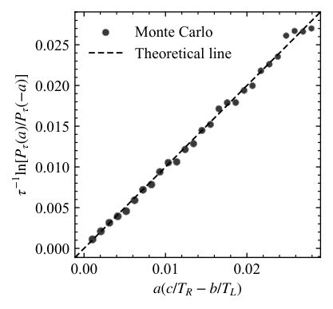
<figcaption class="paper-figure-caption"><b>Fig 5.</b> FIG. 5. Numerical verification of the projected fluctuation relation. The Monte Carlo results (symbols) are compared with the theoretical prediction line (dashed line).</figcaption>
</figure>
</div>

<p><strong>Summary.</strong> This work develops a comprehensive theoretical framework for energy transport in non-reciprocal harmonic chains. It shows that directional asymmetry allows for active control over heat flow, enabling phenomena like cold-to-hot transport. Furthermore, it derives a joint fluctuation theorem, providing a deep connection between the steady-state energy balance and the underlying stochastic dynamics.</p>
<p><strong>Why it may be interesting.</strong> The explicit derivation of a joint fluctuation theorem for energy currents in a non-equilibrium setting provides powerful, quantitative tools for understanding energy flow control, which is highly relevant to quantum thermal machines and open quantum systems.</p>
<details>
<summary>Detailed structure</summary>
<p><strong>Main problem.</strong> The paper investigates how nonreciprocal interactions fundamentally alter energy transport and establish a unified fluctuation framework for heat flow in harmonic chains.</p>
<p><strong>Main result.</strong> Nonreciprocity introduces an additional power current and allows the direction of heat flow to be controlled by the competition between temperature bias and effective directional asymmetry, leading to a joint Gallavotti-Cohen fluctuation relation.</p>
<p><strong>Method.</strong> The analysis employs Green-function techniques, spectral analysis, and stochastic thermodynamics to derive steady-state heat currents and the joint scaled cumulant generating function.</p>
<p><strong>Model / system.</strong> The model is a one-dimensional harmonic chain of N particles coupled to two thermal reservoirs ($T_L, T_R$). The dynamics are governed by a Langevin equation where the coupling matrix is explicitly made asymmetric ($\Phi = \Phi_S + \Phi_A$).</p>
<p><strong>Key observables.</strong> Steady-state heat currents ($\langle j_L 
angle, \langle j_R 
angle$), the nonreciprocal power current ($\langle j_P 
angle$), and the joint scaled cumulant generating function.</p>
<p><strong>Important parameters / regimes.</strong> Temperature bias ($T_L/T_R$) and the ratio of directional coupling strengths ($b/c$).</p>
<p><strong>Assumptions / limitations.</strong> The analysis is restricted to the harmonic limit, one-dimensionality, and nearest-neighbor coupling. It assumes Gaussian white noise for the thermal bath.</p>
<p><strong>Figures summary.</strong> Figure 1 schematically shows the setup. Figure 4 displays the steady-state joint probability distribution $P_	au(j_L, j_R)$ concentrated around a specific transport manifold. Figure 5 numerically verifies the derived joint fluctuation relation.</p>
<p><strong>Paper structure.</strong> The paper first establishes the energy balance by deriving explicit formulas for the three coupled currents ($\langle j_L 
angle, \langle j_R 
angle, \langle j_P 
angle$). It then moves to the fluctuation level, deriving the joint scaled cumulant generating function and establishing the final joint Gallavotti-Cohen fluctuation relation.</p>
</details>
<details>
<summary>Abstract</summary>
<p>Nonreciprocal interactions fundamentally alter energy transport by breaking the symmetry between forward and backward responses. Here, we uncover an exact transport structure for a one-dimensional harmonic chain with asymmetric nearest-neighbor couplings. Using a Green-function approach, we demonstrate that the direction of heat transport is determined not solely by the temperature bias, but by its competition with an effective directional asymmetry. This competition can reverse the direction of heat flow, enabling cold-to-hot transport. We further show that nonreciprocity introduces an additional power channel associated with the antisymmetric sector of the interaction, leading to a generalized steady-state energy balance involving two reservoir heat currents and a nonreciprocal power current. At the fluctuation level, the heat exchanges with the two reservoirs constitute correlated yet distinct stochastic currents, whose joint scaled cumulant generating function obeys an exact Gallavotti-Cohen symmetry. Together, these results establish a unified energetic and fluctuation framework for nonreciprocal heat transport and demonstrate that directional interactions can serve as an active resource for controlling nonequilibrium energy flows.</p>
</details>
<p><sub><a href="#top">↑ back to top</a></sub></p>

<p><a id="paper-2609.10448"></a></p>
<h3 id="coherent-advantage-in-the-computational-expressivity-of-excitonic-networks"><a href="http://arxiv.org/abs/2609.10448v1">Coherent advantage in the computational expressivity of excitonic networks</a></h3>
<p><strong>Authors:</strong> Matthew Du, Carlos Floyd, Dipti Jasrasaria, Suriyanarayanan Vaikuntanathan<br>
<strong>Type:</strong> theory · <strong>Category:</strong> other · <strong>PDF:</strong> <a href="https://arxiv.org/pdf/2609.10448v1">https://arxiv.org/pdf/2609.10448v1</a><br>
<strong>Analysis basis:</strong> full PDF text, analyzed in chunks
<strong>Topic relevance:</strong> <code>analog quantum simulation</code> <strong>3/5</strong> · <code>correlated / nonlocal dissipation</code> <strong>3/5</strong> · <code>driven-dissipative phase transition</code> <strong>3/5</strong> · <code>methods for driven-dissipative</code> <strong>3/5</strong> · <code>non-equilibrium universality</code> <strong>2/5</strong> · <code>Keldysh / 2PI / non-Gaussian methods</code> <strong>1/5</strong> · <code>Tavis-Cummings &amp; cavity-many-emitter</code> <strong>1/5</strong></p>
<div class="figure-strip-hint">↔ Scroll figures horizontally</div>
<div class="paper-figures-scroll">
<figure class="paper-figure-card">
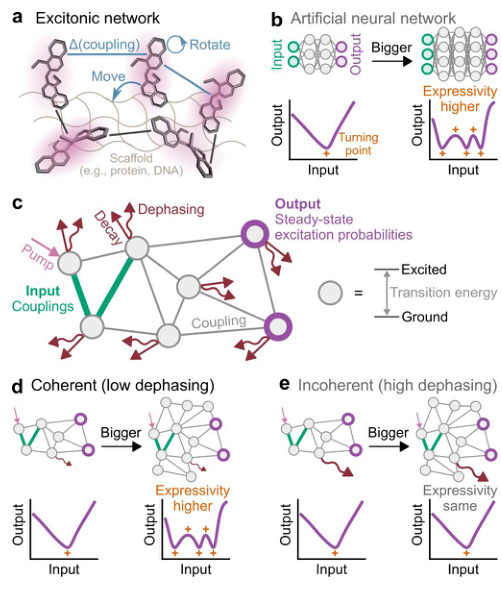
<figcaption class="paper-figure-caption"><b>Fig 1.</b> FIG. 1. Overview: computational expressivity of open quantum networks. (a) In an excitonic network of molecular chromophores, excitations become delocalized through coherent (wave-like) transport mediated by dipole- dipole coupling. Using a scaffold (e.g., protein or DNA), the couplings can be tuned by adjusting the position or orienta- tions of the chromophores. (b) The computational expressiv- ity of an artificial neural network increases with model size. Here the expressivity is measured by the number of turning points. (c) Excitonic network as a computational platform. Each site is associated with a transition energy of excitation and couplings to other sites. Excitations are pumped into...</figcaption>
</figure>
<figure class="paper-figure-card">

<figcaption class="paper-figure-caption"><b>Fig 2.</b> FIG. 2. Computational expressivity grows with system size in the coherent regime. (a) Model of excitonic networks as a computational platform. An excitation on site j = 1, . . . , N has transition energy Ej and can hop to site l according to coupling Vjl = V ∗ lj. Excitations are pumped into site 1 at rate kp and decay from any site at rate kd. Excitations at each site also dephase at a constant rate kφ, as described by the Lindblad master equation. The input of the computation is the coupling V12 between the pumped site 1 and a not-pumped site 2, and the output is the excitation probability pi of a site i at steady state. (b) Examples of computational input-output relations pi(V12) for...</figcaption>
</figure>
<figure class="paper-figure-card">

<figcaption class="paper-figure-caption"><b>Fig 3.</b> FIG. 3. Coherent advantage in computational expressivity. (a, b) Computational expressivity of excitonic networks in the coherent regime of low dephasing (a) and the incoherent regime of high dephasing (b). The input-output relation pi(V12) is given by a rational function whose degree and thus expressivity grows with system size N in the coherent regime (a) but is independent of N in the incoherent regime. The dependence on N can be understood in terms of the number of 1 ↔2 transitions (i.e., mediated by V12) in each regime. (c) Examples of input-output relation for varying dephasing rate kφ (in units of the maximum absolute coupling Vmax). The dashed lines are a fit to rational functions,...</figcaption>
</figure>
<figure class="paper-figure-card">
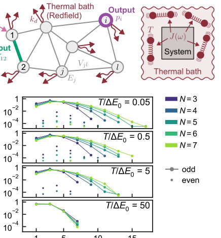
<figcaption class="paper-figure-caption"><b>Fig 4.</b> FIG. 4. Coherent advantage in computational expres- sivity occurs at lower temperatures. (a) Model of ex- citonic network as a computational platform in the pres- ence of dephasing induced by a thermal bath. The dephas- ing is characterized by temperature T and spectral density J(ω), as described by the Redfield master equation. (b) His- togram of turning points in the input-output relations of ran- dom excitonic networks for varying T (in units of ∆E0 = 2Vmax √</figcaption>
</figure>
</div>

<p><strong>Summary.</strong> This paper treats excitonic networks as quantum computational substrates, demonstrating that the ability to compute complex functions (computational expressivity) critically depends on maintaining quantum coherence. Mathematically, coherence allows the input-output mapping to be represented by high-degree rational functions whose complexity scales with system size, a feature lost in the presence of strong dephasing.</p>
<p><strong>Why it may be interesting.</strong> This work provides a concrete physical realization—molecular excitons—where quantum coherence is mathematically shown to be a necessary resource for achieving complex, scalable computational functions, bridging quantum optics and computation theory.</p>
<details>
<summary>Detailed structure</summary>
<p><strong>Main problem.</strong> The study investigates how coherence in open quantum systems, specifically excitonic networks, dictates the computational expressivity of the system's input-output mapping.</p>
<p><strong>Main result.</strong> Coherence enables the computational expressivity to scale with the network size ($N$), mirroring the scaling seen in artificial neural networks, whereas strong dephasing suppresses this scaling.</p>
<p><strong>Method.</strong> The analysis involves deriving the input-output relation ($\pi_i(V_{12})$) as a rational function of the coupling $V_{12}$ and analyzing the degree of the resulting polynomials.</p>
<p><strong>Model / system.</strong> The system is an excitonic network of molecular chromophores, modeled using a Lindblad master equation describing coherent and dissipative dynamics. The input is the intersite coupling $\{V_{jl}\}$, and the output is the steady-state excitation probability.</p>
<p><strong>Key observables.</strong> Computational expressivity, quantified by the number of turning points in the input-output relation $\pi_i(V_{12})$, and the degree of the rational function representing the steady state.</p>
<p><strong>Important parameters / regimes.</strong> Dephasing rate ($k_\phi$), network size ($N$), and the coupling strength ($V_{12}$).</p>
<p><strong>Assumptions / limitations.</strong> The analysis distinguishes between the coherent regime (low dephasing) and the incoherent limit (high dephasing), and the steady state is assumed to be unique due to decay pathways.</p>
<p><strong>Figures summary.</strong> Figures illustrate the contrast between coherent (wave-like) and incoherent (dissipative) dynamics, showing that expressivity scales with $N$ only when coherence is maintained.</p>
<p><strong>Paper structure.</strong> The paper first establishes the physical model and the computational mapping. It then analytically derives that the steady-state population is a rational function of the couplings. The core result compares the polynomial degrees in the coherent vs. incoherent limits, concluding that coherence is the resource for large-scale computation.</p>
</details>
<details>
<summary>Abstract</summary>
<p>The rising energy consumption of AI has generated interest in physical systems as alternative substrates for trainable computation. Recent experimental advances have enabled precise control over the couplings between molecular chromophores, which give rise to coherent excitation dynamics. Here, we study driven-dissipative excitonic networks as a computational platform, where the intersite couplings define the input and the steady state defines the output. We show that coherence enables computational expressivity to scale with network size, analogous to artificial neural networks. Both this scaling and the overall expressivity are suppressed by strong dephasing. Our work establishes coherence as a resource for expressive computation in nonequilibrium quantum systems.</p>
</details>
<p><sub><a href="#top">↑ back to top</a></sub></p>

<p><a id="paper-2609.09979"></a></p>
<h3 id="thermodynamic-and-statistical-signatures-of-modality-changes-in-concentration-distributions-driven-by-stochastic-switching-between-two-activity-states"><a href="http://arxiv.org/abs/2609.09979v1">Thermodynamic and Statistical Signatures of Modality Changes in Concentration Distributions Driven by Stochastic Switching Between Two Activity States</a></h3>
<p><strong>Authors:</strong> Aindrila Deb, Pintu Patra<br>
<strong>Type:</strong> theory · <strong>Category:</strong> statistical mechanics · <strong>PDF:</strong> <a href="https://arxiv.org/pdf/2609.09979v1">https://arxiv.org/pdf/2609.09979v1</a><br>
<strong>Analysis basis:</strong> full PDF text, analyzed in chunks
<strong>Topic relevance:</strong> <code>driven-dissipative phase transition</code> <strong>3/5</strong> · <code>non-equilibrium universality</code> <strong>3/5</strong> · <code>Full counting statistics</code> <strong>2/5</strong> · <code>Keldysh / 2PI / non-Gaussian methods</code> <strong>2/5</strong> · <code>methods for driven-dissipative</code> <strong>2/5</strong> · <code>analog quantum simulation</code> <strong>1/5</strong> · <code>correlated / nonlocal dissipation</code> <strong>1/5</strong> · <code>quantum measurements</code> <strong>1/5</strong></p>
<div class="figure-strip-hint">↔ Scroll figures horizontally</div>
<div class="paper-figures-scroll">
<figure class="paper-figure-card">
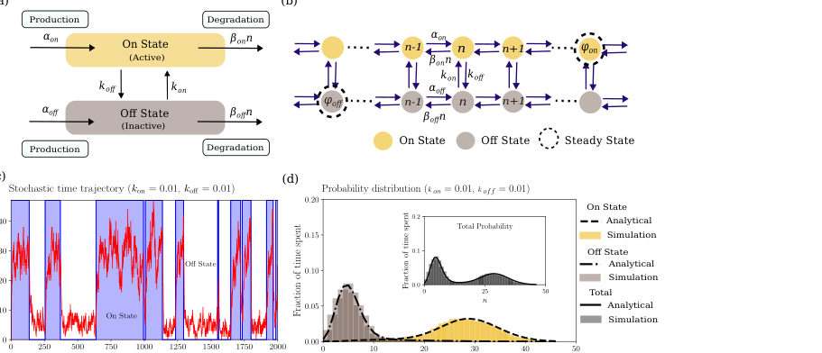
<figcaption class="paper-figure-caption"><b>Fig 1.</b> FIG. 1: Stochastic switching between two activity states coupled to accumulation dynamics. (a) We consider a genetic state that stochastically transitions between the ON (active) and OFF (inactive) activity states and vice versa with rates kon and koff, respectively. In each state, the molecular copy number, n, undergoes production at rates αon or αoff, and linear degradation at rates βonn or βoffn. (b) The joint state space (S, n) illustrates different transitions. Horizontal transitions represent intra-state production and degradation processes, while vertical transitions represent discrete switching between the two activity states. The dashed circles show the local steady-state...</figcaption>
</figure>
<figure class="paper-figure-card">
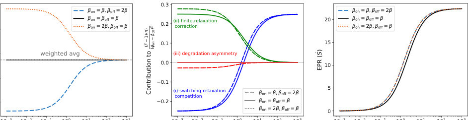
<figcaption class="paper-figure-caption"><b>Fig 2.</b> FIG. 2: Variation of mean, Fano factor components, and EPR with degradation rate. (a) Variation of mean molecular copy number (⟨n⟩) with the degradation rate (β). The grey dashed line corresponds to the first term (weighted average) in the mean expression (Eq. 7). (b) Variation of each term in Fano factor expression (Eq. 8) (which contributes to the excess Fano factor, (F −1)⟨n⟩ (ϕon−ϕoff)2 ) with degradation rate β. The curves (dashed and</figcaption>
</figure>
<figure class="paper-figure-card">
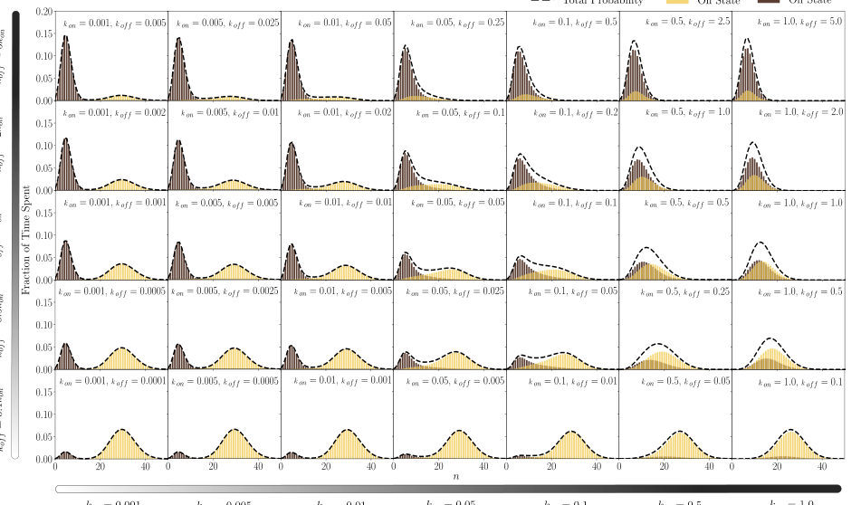
<figcaption class="paper-figure-caption"><b>Fig 3.</b> FIG. 3: Steady-state probability distributions across the different switching rates. Each panel shows the exact analytical steady-state distributions for the ON state (Pn, yellow), OFF state (Qn, brown), and the total probability (ψn = Pn + Qn, black dashed curve), computed from Eqs. 5–6. The base switching rate kon increases along the horizontal axis (left to right), and the switching bias koff/kon increases along the vertical axis (bottom to top). Parameters are fixed at αon = 3.0, αoff = 1.0, βon = 0.1, βoff = 0.2, giving intrinsic levels ϕon = 30.0 and ϕoff = 5.0.</figcaption>
</figure>
<figure class="paper-figure-card">
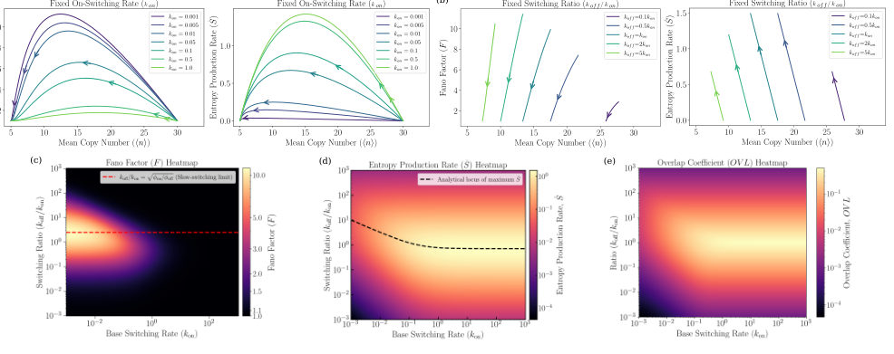
<figcaption class="paper-figure-caption"><b>Fig 4.</b> FIG. 4: Variation of Fano factor and EPR. (a) Fano factor F (left sub-panel) and entropy production rate ˙S (right sub-panel) plotted against the mean copy number ⟨n⟩as parametric curves, with the base switching rate kon fixed and the bias koff/kon is varied (arrows indicate the direction of increasing koff). Each curve traces a characteristic curve: at extreme bias one state dominates, the distribution is near-Poissonian, and both F ≈1 and ˙S ≈0; at intermediate bias both states are substantially occupied, F and ˙S reach their respective maxima. (b) Fano factor F (left sub-panel) and EPR ˙S (right sub-panel) plotted with the switching ratio koff/kon fixed and both kon and koff are varied...</figcaption>
</figure>
</div>

<p><strong>Summary.</strong> This theoretical work analyzes molecular accumulation in a system that stochastically switches between two activity states. By deriving exact analytical solutions, the authors quantify how kinetic parameters control the resulting molecular distribution, noise level (Fano factor), and thermodynamic dissipation (EPR). This framework provides deep insights into non-equilibrium stochastic processes applicable across biology and physics.</p>
<p><strong>Why it may be interesting.</strong> The rigorous application of non-equilibrium thermodynamics (EPR) and fluctuation analysis (Fano factor) to a stochastic switching model provides a powerful, generalizable framework for analyzing non-equilibrium dynamics in complex systems, relevant to open quantum systems modeling.</p>
<details>
<summary>Detailed structure</summary>
<p><strong>Main problem.</strong> The paper investigates the thermodynamic and statistical signatures of changes in molecular concentration distributions caused by stochastic switching between two distinct activity states.</p>
<p><strong>Main result.</strong> The study establishes a generalized framework showing how kinetic parameters dictate molecular distributions, noise (Fano factor), and dissipation (Entropy Production Rate) during these stochastic transitions.</p>
<p><strong>Method.</strong> The authors use the Chemical Master Equation (CME) formalism, employing Probability Generating Functions (PGF) to derive exact analytical expressions for steady-state properties.</p>
<p><strong>Model / system.</strong> The model is a generalized two-state promoter switching system for mRNA accumulation, where the copy number dynamics are governed by state-dependent stochastic production and degradation rates.</p>
<p><strong>Key observables.</strong> Steady-state probability distribution, Mean concentration, Fano factor (noise measure), and Entropy Production Rate (EPR/dissipation).</p>
<p><strong>Important parameters / regimes.</strong> Stochastic switching rates ($k_{on}, k_{off}$), state-dependent production/degradation rates ($\alpha, eta$), and the resulting kinetic regimes (fast vs. slow switching).</p>
<p><strong>Assumptions / limitations.</strong> The analysis assumes first-order degradation kinetics and utilizes the CME framework to track the joint probability distribution across the two states.</p>
<p><strong>Figures summary.</strong> Figures illustrate the conceptual state switching, the joint state space, representative stochastic trajectories showing relaxation, and heatmaps mapping Fano factor and EPR across varying switching rates.</p>
<p><strong>Paper structure.</strong> The paper proceeds by deriving exact analytical expressions for the steady-state distribution and key metrics using PGFs, followed by characterizing how these metrics vary across the parameter space by varying the switching rates to identify specific physical regimes.</p>
</details>
<details>
<summary>Abstract</summary>
<p>Stochastic switching between gene expression states, coupled with production and degradation dynamics, governs the accumulation of mRNA and proteins in cells. The concentrations of these accumulated entities dictate the phenotypic distribution of genetically identical cells. The underlying accumulation dynamics are well-captured by a two-state promoter switching model, with statistical and thermodynamic properties quantified via the Fano factor and entropy production rates. However, how these measures correlate with concentration distributions and their shifts under varying kinetic parameters remains largely unexplored. To this end, we use chemical master equations to study a generalized model of mRNA accumulation dynamics in the presence of stochastic switching between two activity states and state-dependent production and degradation rates. We derive exact expressions for the steady-state probability distribution and analytically compute the mean concentration, Fano factor, and entropy production rate (EPR). Simplifying these expressions, we identify contributions arising from stochastic switching rates and relaxation dynamics toward equilibrium in each activity state. Next, using our theoretical results, we characterize the variation in the Fano factor and EPR as a function of mean expression during modality changes of the distributions mediated by the variation of switching rates. We also identify the conditions in kinetic parameters that achieve the highest Fano factor and entropy production rates. Our findings establish a generalized framework for examining stochastic accumulation dynamics, clarifying how kinetic parameters dictate molecular distributions, noise, and dissipation. These insights extend readily to broader contexts coupling stochastic switching with accumulation, including protein burst dynamics, phenotype-switching-mediated drug intake, and queuing theory.</p>
</details>
<p><sub><a href="#top">↑ back to top</a></sub></p>

<p><a id="paper-2609.09939"></a></p>
<h3 id="image-recognition-based-on-optical-spike-processing-with-exciton-polaritons"><a href="http://arxiv.org/abs/2609.09939v1">Image recognition based on optical spike processing with exciton-polaritons</a></h3>
<p><strong>Authors:</strong> Olgierd Jeziorski, Jakub Rogala, Krzysztof Tyszka<br>
<strong>Type:</strong> theory · <strong>Category:</strong> disordered systems and neural networks · <strong>PDF:</strong> <a href="https://arxiv.org/pdf/2609.09939v1">https://arxiv.org/pdf/2609.09939v1</a><br>
<strong>Analysis basis:</strong> full PDF text, analyzed in chunks
<strong>Topic relevance:</strong> <code>analog quantum simulation</code> <strong>3/5</strong> · <code>driven-dissipative phase transition</code> <strong>3/5</strong> · <code>methods for driven-dissipative</code> <strong>3/5</strong> · <code>Tavis-Cummings &amp; cavity-many-emitter</code> <strong>2/5</strong> · <code>Keldysh / 2PI / non-Gaussian methods</code> <strong>1/5</strong> · <code>correlated / nonlocal dissipation</code> <strong>1/5</strong> · <code>non-equilibrium universality</code> <strong>1/5</strong></p>
<div class="figure-strip-hint">↔ Scroll figures horizontally</div>
<div class="paper-figures-scroll">
<figure class="paper-figure-card">

<figcaption class="paper-figure-caption"><b>Fig 1.</b> Fig. 1 shows a diagonal region of optimal performance. Performance degrades outside this regime due to two failure modes:</figcaption>
</figure>
<figure class="paper-figure-card">

<figcaption class="paper-figure-caption"><b>Fig 2.</b> Fig. 6 compares the classification accuracy across four distinct models: a base linear model trained on raw pixels, a model using pure condensate features, a combined model using condensate features concatenated with raw pixels, and a Feed-Forward Network (FFN). In the combined model, the N-dimensional temporal feature vector extracted from the condensate is concatenated directly with the original M-dimensional raw pixel array, extending the</figcaption>
</figure>
<figure class="paper-figure-card">

<figcaption class="paper-figure-caption"><b>Fig 3.</b> Fig. 9 illustrates the classification performance when raw pixel data is combined with the condensate features. Re- markably, the accuracy remains stable and high across all tested values of N for both the 10-digit and 2-digit tasks. This highlights a critical practical advantage: while capturing the fine details of standalone linear processing requires high temporal resolution, the most beneficial nonlinear processing occurs over longer, macroscopic timescales. As a result, the system can utilize the condensate’s powerful nonlinear pro-</figcaption>
</figure>
</div>

<p><strong>Summary.</strong> This work demonstrates image recognition using the transient dynamics of exciton-polariton condensates, proposing a fully optical neuromorphic computing platform. By encoding images as optical pulses, the system's nonlinear response generates rich temporal features that achieve high classification accuracy. This validates the use of polariton dynamics for ultrafast, nonlinear information processing.</p>
<p><strong>Why it may be interesting.</strong> It demonstrates a direct application of nonlinear, non-equilibrium many-body physics (polariton dynamics) to solve a complex computational problem (image recognition), providing a blueprint for optical computation.</p>
<details>
<summary>Detailed structure</summary>
<p><strong>Main problem.</strong> The paper addresses the need for fully optical, energy-efficient, and fast neuromorphic computing systems, specifically for image recognition, to overcome limitations of classical architectures.</p>
<p><strong>Main result.</strong> Exciton-polariton dynamics can be effectively utilized to perform image recognition with high accuracy (up to 93.2%) by extracting useful nonlinear temporal features.</p>
<p><strong>Method.</strong> The MNIST dataset is encoded into time-varying optical pulse sequences that drive the dynamics of an exciton-polariton condensate, and the resulting temporal features are fed into a linear classifier.</p>
<p><strong>Model / system.</strong> The physical system is an exciton-polariton condensate in semiconductor microcavities. The dynamics are modeled by coupled ordinary differential equations describing the condensate population, active reservoir, and inactive reservoir.</p>
<p><strong>Key observables.</strong> Classification accuracy, condensate density $n_C(t)$, and the resulting feature vector derived from temporal integration.</p>
<p><strong>Important parameters / regimes.</strong> Optimal operational parameters ($\Delta t \approx 30 	ext{ ps}$, width $\approx 5 	ext{ ps}$), and the comparison between optimal, under-stimulated, and saturated operational regimes.</p>
<p><strong>Assumptions / limitations.</strong> The analysis uses a single-mode approximation focusing only on temporal evolution, and the MNIST dataset is noted as being largely linearly separable.</p>
<p><strong>Figures summary.</strong> Figures illustrate the optimal regime showing strong nonlinear spiking, contrasting with under-stimulated (noisy) and saturated (linear) regimes. Accuracy comparisons show the combined feature set outperforms raw pixels and FFNs.</p>
<p><strong>Paper structure.</strong> The paper first establishes the physical model and dynamics, then details the data encoding process, followed by presenting the classification results comparing various feature sets and operational regimes.</p>
</details>
<details>
<summary>Abstract</summary>
<p>Exciton-polariton condensates combine ultrafast dynamics with strong optical nonlinearities, making them promising for optical neuromorphic computing. Here, we numerically demonstrate image recognition using the transient response of an exciton-polariton condensate. Downscaled MNIST images are encoded as optical pulse sequences, and the resulting condensate dynamics are sampled and processed by a linear classifier. For ten-class classification, condensate features achieve 92.2% accuracy, compared with 91.4% for raw-pixel linear classification. Combining both feature sets increases the accuracy to 93.2%. For the challenging binary classification of digits 7 and 9, the combined model reaches 97.3%, exceeding both the linear (95.5%) and feed-forward neural-network (96.6%) baselines. These results demonstrate that polariton dynamics can extract useful nonlinear features for ultrafast optical information processing.</p>
</details>
<p><sub><a href="#top">↑ back to top</a></sub></p>

<p><a id="paper-2609.09500"></a></p>
<h3 id="topological-instability-and-reentrant-crystallization-in-active-solids"><a href="http://arxiv.org/abs/2609.09500v1">Topological instability and reentrant crystallization in active solids</a></h3>
<p><strong>Authors:</strong> Zory Davoyan, Aditya Jha, Anton Souslov<br>
<strong>Type:</strong> theory · <strong>Category:</strong> statistical mechanics · <strong>PDF:</strong> <a href="https://arxiv.org/pdf/2609.09500v1">https://arxiv.org/pdf/2609.09500v1</a><br>
<strong>Analysis basis:</strong> full PDF text, analyzed in chunks
<strong>Topic relevance:</strong> <code>driven-dissipative phase transition</code> <strong>3/5</strong> · <code>non-equilibrium universality</code> <strong>3/5</strong> · <code>Keldysh / 2PI / non-Gaussian methods</code> <strong>2/5</strong> · <code>methods for driven-dissipative</code> <strong>2/5</strong> · <code>Frenkel-Kontorova</code> <strong>1/5</strong> · <code>analog quantum simulation</code> <strong>1/5</strong> · <code>correlated / nonlocal dissipation</code> <strong>1/5</strong> · <code>quantum measurements</code> <strong>1/5</strong></p>
<div class="figure-strip-hint">↔ Scroll figures horizontally</div>
<div class="paper-figures-scroll">
<figure class="paper-figure-card">

<figcaption class="paper-figure-caption"><b>Fig 1.</b> FIG. 1. (a) Numerical phase diagram of the odd Cosserat solid. The activity is defined as the ratio between the strengths of the microscopic nonconservative and conservative forces, ϵa and ϵp, respectively. The molecular dynamics simulations were performed for a total of 104 particles interacting with conservative Gay-Berne forces with an aspect ratio of ∼1.2. Activity was introduced through nonconservative pairwise chiral forces with spherical symmetry. Further details of the simulation procedure are given in End Matter. (i)-(iv) Snapshots of Voronoi diagrams showing the prevalence of blue (7-fold) and red (5-fold) defects for various values of activity and temperature. (v) Schematic of...</figcaption>
</figure>
<figure class="paper-figure-card">

<figcaption class="paper-figure-caption"><b>Fig 2.</b> FIG. 2. (a) Renormalization group flow of the active Cosserat solid to linear order in activity. The active stresses provide a tuning parameter for the bare defect fugacity driving melt- ing transitions at otherwise stable parameter values. (b) A comparison of the analytical core energy and the rate of de- fect creation in simulations. Each data point is the average number of defects, N, observed over 104 simulation time steps and N0 is the number of defects observed at the spontaneous destabilization point. The expression for the analytical model is the zero-temperature limit −α2(log ma/2 + ˜γ) + C. C is a constant such that the core energy at ϵa/ϵp = 0 coincides with the numerical values,...</figcaption>
</figure>
</div>

<p><strong>Summary.</strong> This work analyzes the melting transition in active solids by extending defect-mediated theories to include non-reciprocal and micropolar elastic effects. The key finding is the prediction of a 'topological instability' mechanism at strong activity, leading to reentrant crystallization. This suggests that activity can stabilize quasi-long-range order in ways not predicted by equilibrium statistical mechanics.</p>
<p><strong>Why it may be interesting.</strong> The concept of topological instability driven by non-equilibrium activity provides a novel, non-equilibrium route to phase transitions, which has parallels in driven quantum many-body systems.</p>
<details>
<summary>Detailed structure</summary>
<p><strong>Main problem.</strong> The paper investigates the melting mechanism in active solids, extending KTHNY theory to include non-reciprocal elasticity and micropolar coupling.</p>
<p><strong>Main result.</strong> Strong non-reciprocity leads to a topological instability mechanism for 2D melting, which surprisingly results in reentrant crystallization where quasi-long-range order persists above the equilibrium melting temperature.</p>
<p><strong>Method.</strong> The authors employ a combination of field theory, Renormalization Group (RG) analysis, and simulations to characterize defect-mediated transitions.</p>
<p><strong>Model / system.</strong> The system is an active solid modeled by a continuum theory incorporating micropolar degrees of freedom and odd elasticity. The dynamics are governed by overdamped equations of motion.</p>
<p><strong>Key observables.</strong> Hexatic order parameter ($\psi_6$), structure factor peaks, defect-pair fugacity, and renormalized elastic moduli.</p>
<p><strong>Important parameters / regimes.</strong> Non-reciprocity strength, activity level ($\epsilon_a/\epsilon_p$), and core energy shift ($\Delta E_c$).</p>
<p><strong>Assumptions / limitations.</strong> The theory relies on extending existing theories (KTHNY) and making approximations regarding the relaxation rates of different degrees of freedom.</p>
<p><strong>Figures summary.</strong> Figures illustrate the phase diagram dependence on activity, the decay of the hexatic order parameter, and comparisons of structure factors between reentrant and equilibrium crystals.</p>
<p><strong>Paper structure.</strong> The paper builds from extending the constitutive relations to include odd and micropolar terms, develops the defect interaction potential and RG flow equations, and finally analyzes the resulting phase transitions and reentrant behavior.</p>
</details>
<details>
<summary>Abstract</summary>
<p>We extend the KTHNY theory of defect-mediated melting in two dimensions to the case of active solids exhibiting both non-reciprocal (odd) elasticity and Cosserat (micropolar) coupling. For perturbatively small values of non-reciprocity, melting still proceeds via defect unbinding, but the melting temperature shifts due to activity. However, at a threshold value of non-reciprocity, we discover a qualitatively distinct mechanism for 2D melting, which we call topological instability. This melting occurs through the proliferation of defect pairs at any temperature. We use a combination of field theory and simulations to characterize this zero-temperature transition in terms of the defect-pair fugacity. Surprisingly, for higher activity values, we find reentrant crystallization, where the quasi-long-range order survives even at temperatures for which the equilibrium crystal would melt. Although active solids present one realization of this topological instability, we envision core-energy-driven defect proliferation as a generic and unexplored route for two-dimensional melting.</p>
</details>
<p><sub><a href="#top">↑ back to top</a></sub></p>

<p><a id="paper-2609.10045"></a></p>
<h3 id="a-machine-learned-dynamical-phase-diagram-of-the-one-dimensional-nonlinear-schrodinger-equation-with-quasiperiodic-disorder-and-a-static-field"><a href="http://arxiv.org/abs/2609.10045v1">A machine-learned dynamical phase diagram of the one-dimensional nonlinear Schrödinger equation with quasiperiodic disorder and a static field</a></h3>
<p><strong>Authors:</strong> Marcos Pérez<br>
<strong>Type:</strong> theory · <strong>Category:</strong> disordered systems and neural networks · <strong>PDF:</strong> <a href="https://arxiv.org/pdf/2609.10045v1">https://arxiv.org/pdf/2609.10045v1</a><br>
<strong>Analysis basis:</strong> full PDF text, analyzed in chunks
<strong>Topic relevance:</strong> <code>analog quantum simulation</code> <strong>3/5</strong> · <code>methods for driven-dissipative</code> <strong>3/5</strong> · <code>driven-dissipative phase transition</code> <strong>2/5</strong> · <code>non-equilibrium universality</code> <strong>2/5</strong> · <code>Frenkel-Kontorova</code> <strong>1/5</strong> · <code>Keldysh / 2PI / non-Gaussian methods</code> <strong>1/5</strong> · <code>scars &amp; prethermalization</code> <strong>1/5</strong></p>
<div class="figure-strip-hint">↔ Scroll figures horizontally</div>
<div class="paper-figures-scroll">
<figure class="paper-figure-card">
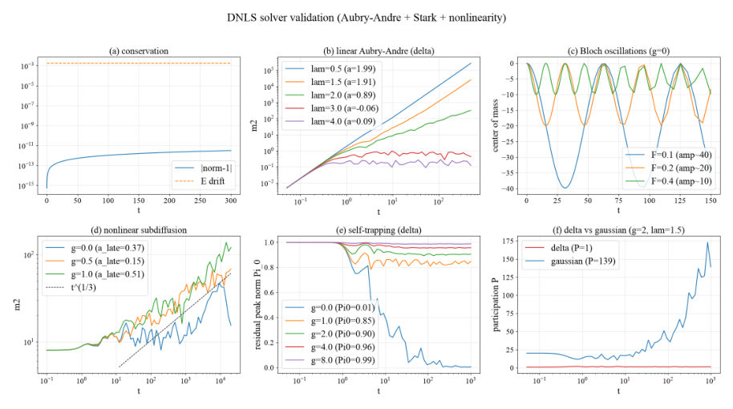
<figcaption class="paper-figure-caption"><b>Fig 1.</b> Figure 1: Solver validation: (a) norm and energy conservation; (b) the linear Aubry–Andr´e metal–insulator transition at λ = 2; (c) Bloch oscillations with center-of-mass amplitude 4/F; (d) interaction-induced destruction of quasiperiodic localization; (e) self-trapping of a delta state at strong interaction; (f) the delta-vs-Gaussian self-trapping contrast of Larcher, Dalfovo and Mod- ugno [6].</figcaption>
</figure>
<figure class="paper-figure-card">

<figcaption class="paper-figure-caption"><b>Fig 2.</b> Figure 2: Machine-learned dynamical phase diagrams. Rows: slices A (F = 0, g vs. λ) and B (λ = 1, g vs. F). Columns: delta and Gaussian initial states. White dots mark crossover cells, where the per-point threshold rule disagrees with its cluster’s majority-vote name (Sec. 4.4).</figcaption>
</figure>
<figure class="paper-figure-card">

<figcaption class="paper-figure-caption"><b>Fig 3.</b> Figure 3: Validation against long-time ground truth. Left: asymptotic exponent α∞by short-time cluster (dashed lines mark the weak- and strong-chaos values 1/3 and 1/2; tv annotations give the median achieved tvalid per phase). Center: long-time (log10 m2, α∞) colored by short-time phase. Right: long-time residual peak norm Π0 by short-time cluster, the direct self-trapping check that does not rely on α∞.</figcaption>
</figure>
<figure class="paper-figure-card">

<figcaption class="paper-figure-caption"><b>Fig 4.</b> Figure 4: PCA of the standardized short-time feature matrix, by initial state (rows), with cluster identity colored (left) and PCA loadings (right).</figcaption>
</figure>
<figure class="paper-figure-card">

<figcaption class="paper-figure-caption"><b>Fig 5.</b> Figure 4 shows the first two principal components of the standardized feature matrix, which together capture most of its variance (66%+19% delta, 80%+12% gaussian). PC1 is dominated by the delocalization block (αm2, log m2, log P, growth) and PC2 by the retention/oscillation block (peak- drop, Bloch score, center-of-mass). The two physically independent axes, “how far/fast” and “what stayed behind”, emerge from the clustering without being hand-specified, even though the cluster names are (Sec. 4.4). The self-trapped cluster in the delta panel visibly splits into two PC1- separated clouds, the geometric signature of the α∞bimodality quantified in Sec. 5.3.</figcaption>
</figure>
</div>

<p><strong>Summary.</strong> This work develops a machine-learning framework to map the dynamical phase diagram of a nonlinear wave equation with quasiperiodic disorder. By using short-time simulations and clustering, the authors efficiently delineate five distinct transport regimes. The results reveal crucial differences in dynamics based on the initial state, providing quantitative phase boundaries for understanding wave packet evolution in complex quantum media.</p>
<p><strong>Why it may be interesting.</strong> The combination of nonlinear dynamics, quasiperiodic disorder, and machine learning to map high-dimensional phase spaces is highly relevant for understanding complex quantum many-body systems where direct simulation is intractable.</p>
<details>
<summary>Detailed structure</summary>
<p><strong>Main problem.</strong> The paper aims to map the complex dynamical phase diagram of a wave packet evolving under a nonlinear Schrödinger equation subjected to quasiperiodic disorder and a static field.</p>
<p><strong>Main result.</strong> Five distinct transport regimes (ballistic, localized, subdiffusive, etc.) are identified, and the study highlights a striking contrast in behavior between delta and Gaussian initial states.</p>
<p><strong>Method.</strong> It employs a computationally efficient strategy using short-time simulations combined with Gaussian-mixture clustering to partition the parameter space, followed by validation using long-time asymptotic simulations.</p>
<p><strong>Model / system.</strong> The system is modeled by the one-dimensional discrete nonlinear Schrödinger (Gross-Pitaevskii) equation, incorporating a quasiperiodic Aubry-André potential and a static (Stark) field. The dynamics are studied for two initial conditions: a delta function and a Gaussian wave packet.</p>
<p><strong>Key observables.</strong> Spreading exponent ($\alpha_\infty$), long-time residual peak norm ($\Pi_0$), second moment ($m_2$), and participation number ($P$).</p>
<p><strong>Important parameters / regimes.</strong> Self-interaction strength ($g$), static field ($F$), and quasiperiodic strength ($\lambda$).</p>
<p><strong>Assumptions / limitations.</strong> The physical identity of the clusters is assigned semi-supervisingly using hand-calibrated rules, as the clustering itself is unsupervised.</p>
<p><strong>Figures summary.</strong> Figures display space-time density portraits and the evolution of the second moment ($m_2(t)$) for representative points across the identified dynamical regimes.</p>
<p><strong>Paper structure.</strong> The paper first introduces the physical model and the computational bottleneck. It then details the machine-learning approach (short-time feature extraction and clustering) and validates the resulting phase map against long-time asymptotic simulations, concluding with specific regime analyses for different initial states.</p>
</details>
<details>
<summary>Abstract</summary>
<p>We map the transport regimes of a wave packet evolving under the one-dimensional discrete nonlinear Schrödinger (Gross-Pitaevskii) equation with a quasiperiodic Aubry-André potential and a static (Stark) field, as a function of self-interaction $g$, field $F$, and quasiperiodic strength $λ$, for two initial states (delta and Gaussian). Instead of one expensive long-time simulation per grid point, we run 3600 short simulations, reduce each to eight dynamical features, and cluster parameter space with a Gaussian mixture model. Clustering finds the boundaries between regimes unsupervised; each cluster's name is then assigned by a hand-calibrated rule, and an ablation shows clustering measurably smooths those boundaries rather than merely relabeling them. The five resulting regimes (ballistic, localized, oscillatory-localized, subdiffusive, and self-trapped) are validated against 100 long runs on a lattice eight times larger than the short sweep, so the validation window is longer than the training window even for the fastest-spreading regime. The short-time clusters predict the long-time asymptotic spreading exponent ($α_\infty = 2.01\pm0.07$ ballistic, $0.28\pm0.16$ subdiffusive, consistent with the weak-chaos prediction $α=1/3$) and, independently, a long-time retention $Π_0=0.72\pm0.32$ for the self-trapped cluster, whose exponent alone is not diagnostic. The initial-state contrast is striking: the delta state develops a broad self-trapping wedge (onset at $g=3.907\pm0.017$ at $λ=0$) that invades the ballistic and localized regions as $g$ grows, while the Gaussian state shows no self-trapping, instead opening a subdiffusive corridor along the Aubry-André critical line that widens with $g$. The scheme yields a full $15\times15$ phase map in minutes per slice, where direct asymptotic simulation ($t\gtrsim10^6$ per point) is prohibitive.</p>
</details>
<p><sub><a href="#top">↑ back to top</a></sub></p>

<p><a id="paper-2609.10342"></a></p>
<h3 id="quench-dynamics-in-nonreciprocal-aubry-andre-harper-model"><a href="http://arxiv.org/abs/2609.10342v1">Quench dynamics in nonreciprocal Aubry-André-Harper model</a></h3>
<p><strong>Authors:</strong> Zhiyu Pei, Yongxu Fu, Gao Xianlong<br>
<strong>Type:</strong> theory · <strong>Category:</strong> disordered systems and neural networks · <strong>PDF:</strong> <a href="https://arxiv.org/pdf/2609.10342v1">https://arxiv.org/pdf/2609.10342v1</a><br>
<strong>Analysis basis:</strong> full PDF text, analyzed in chunks
<strong>Topic relevance:</strong> <code>driven-dissipative phase transition</code> <strong>3/5</strong> · <code>non-equilibrium universality</code> <strong>3/5</strong> · <code>analog quantum simulation</code> <strong>2/5</strong> · <code>methods for driven-dissipative</code> <strong>2/5</strong> · <code>Frenkel-Kontorova</code> <strong>1/5</strong> · <code>Keldysh / 2PI / non-Gaussian methods</code> <strong>1/5</strong> · <code>scars &amp; prethermalization</code> <strong>1/5</strong></p>
<div class="figure-strip-hint">↔ Scroll figures horizontally</div>
<div class="paper-figures-scroll">
<figure class="paper-figure-card">
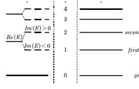
<figcaption class="paper-figure-caption"><b>Fig 1.</b> FIG. 1: 1D nonreciprocal AAH model. (a) Complex en- ergy spectrum as a function of λ at δ = 0.5 for N = 233. (b) Phase diagram of the mean inverse participation ra- tio (MIPR) in the λ–δ plane for N = 233, where the color encodes the localization strength. (c) Parity-sorting scheme: in the extended phase (λ &lt; 2 + 2δ), eigenstates are ordered by ReE in ascending order, then by ImE for degenerate real parts; even (odd) indices correspond to positive (negative) imaginary parts.</figcaption>
</figure>
<figure class="paper-figure-card">
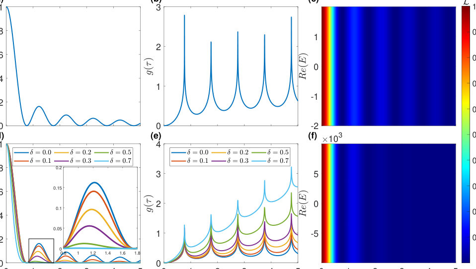
<figcaption class="paper-figure-caption"><b>Fig 2.</b> FIG. 2: Time-resolved quench dynamics between the strongly localized and deeply extended limits. (a)-(c) Quenches from the deeply extended state (λ = 0) to the strongly localized one (λ →∞). (d)-(f) Quenches from the strongly localized to the deeply extended state. (a), (b) Analytical results for Loschmidt echo L(τ) and the corresponding rate function g(τ) at δ = 0.2. (d), (e) Analytical results for L(τ) and the rate function g(τ) for multiple values of δ. (c), (f) Numerical L(τ) from the full spectrum of the initial Hamiltonian, demonstrating the energy-independent behavior for N = 233.</figcaption>
</figure>
<figure class="paper-figure-card">

<figcaption class="paper-figure-caption"><b>Fig 3.</b> FIG. 3: Time-resolved quench dynamics starting from a deeply extended initial state (λi = 0). The vertical axis denotes the eigenstate index sorted according to the scheme in Fig. 1(c), and the horizontal axis represents the evolution time τ. The system is quenched from λi = 0 to (a) λf = 2 (extended phase), (b) λf = 3 (critical regime), and (c) λf = 5 (localized phase). To emphasize the distinction between even- and odd-index eigenstates, the contributions in (a)-(c) are replotted separately in (d)-(f) and (g)-(i) for the even and odd sectors, respectively. The region near the dashed lines corresponds to the gap of the postquench Hamiltonian. The region near the dashed lines corresponds to...</figcaption>
</figure>
<figure class="paper-figure-card">

<figcaption class="paper-figure-caption"><b>Fig 4.</b> FIG. 4: Time-resolved quench dynamics starting from a strongly localized initial state (λi = 10000). The system is quenched from λi = 10000 to (a) λf = 2 (extended phase), (b) λf = 3 (critical regime), and (c) λf = 5 (localized phase). Same notation and line styles as in Fig. 3, with δ = 0.5 and N = 233.</figcaption>
</figure>
<figure class="paper-figure-card">

<figcaption class="paper-figure-caption"><b>Fig 5.</b> FIG. 5: Diffusion dynamics in the nonreciprocal AAH model. (a) Phase diagram of the diffusion exponent β in the λ-δ plane, colored by β, which divides the phase di- agram into four distinct regions: (I) localized phase, (II) critical phase, (III) reciprocal diffusive phase, and (IV) nonreciprocal diffusive phase. (b) Wavepacket spreading σ(τ) at δ = 0.5, for representative λ values along the dashed line in (a): λ = 0 (deeply diffusive phase), λ = 2 (diffusive phase), λ = 3 (critical phase), and λ = 4 (lo- calized phase). Insets show the double-logarithmic fits of log σ(τ) versus log τ, where the slope gives the diffusion exponent β. The system size is N = 233.</figcaption>
</figure>
</div>

<p><strong>Summary.</strong> This work analyzes quench dynamics in the nonreciprocal Aubry-André-Harper model, revealing that nonreciprocity fundamentally alters transport properties. By studying wavepacket diffusion and DQPTs, the authors show that the critical phase becomes ballistic, contrasting sharply with the Hermitian case. This establishes nonreciprocity as a key mechanism for controlling quantum transport in quasiperiodic systems.</p>
<p><strong>Why it may be interesting.</strong> The findings provide a detailed understanding of how non-Hermiticity and nonreciprocity fundamentally alter transport regimes (e.g., promoting ballistic transport at criticality) compared to standard Hermitian models, which is crucial for designing quantum devices.</p>
<details>
<summary>Detailed structure</summary>
<p><strong>Main problem.</strong> The study investigates anomalous transport properties and dynamical quantum phase transitions (DQPTs) in nonreciprocal quasiperiodic systems.</p>
<p><strong>Main result.</strong> Nonreciprocity reverses the standard transport hierarchy, causing the critical phase to become ballistic ($eta=1$) while suppressing transport in the delocalized phase.</p>
<p><strong>Method.</strong> The analysis combines the study of DQPTs using the biorthogonal Loschmidt echo and characterizing wavepacket diffusion via the long-time scaling exponent ($eta$) of the root-mean-square displacement.</p>
<p><strong>Model / system.</strong> The system is the one-dimensional nonreciprocal Aubry-André-Harper (AAH) model, characterized by non-Hermitian hopping terms ($t_R 
eq t_L$) and a quasiperiodic potential.</p>
<p><strong>Key observables.</strong> Diffusion exponent $eta$ ($\sigma(	au) \propto 	au^eta$), Loschmidt echo $L(	au)$, and the energy-resolved nature of DQPTs.</p>
<p><strong>Important parameters / regimes.</strong> Nonreciprocity parameter $\delta$, quasiperiodic potential strength $\lambda$, and the golden ratio $\alpha$.</p>
<p><strong>Assumptions / limitations.</strong> The analysis relies on classifying the energy spectrum using a parity-sorted scheme that encodes generalized $\mathcal{PT}$ symmetry.</p>
<p><strong>Figures summary.</strong> Figures illustrate the complex energy spectrum, the phase diagram based on Mean Inverse Participation Ratio (MIPR), and quench dynamics comparing perturbative and numerical results for even/odd states.</p>
<p><strong>Paper structure.</strong> The paper develops two complementary diagnostic tools: energy-resolved DQPT analysis using parity-sorted spectra, and the $eta$-phase diagram derived from wavepacket diffusion, both highlighting the role of nonreciprocity.</p>
</details>
<details>
<summary>Abstract</summary>
<p>The critical phase of a non-Hermitian quasicrystal can support stronger transport than its surrounding delocalized phase. We demonstrate this anomalous behavior in the one-dimensional nonreciprocal Aubry-André-Harper model through a combined study of dynamical quantum phase transitions (DQPTs) and wavepacket diffusion. Using a parity-sorted energy-spectrum classification that directly encodes the generalized $\mathcal{PT}$ symmetry, we find that DQPTs in this system are energy-resolved, in contrast to the energy-independent DQPTs of Hermitian quasicrystals. The energy-resolved features are most pronounced when the initial and final Hamiltonians belong to different phases (localized or extended), and they are tied to the even-odd index structure of the spectrum, which we exploit to organize the quench-dynamical landscape. For wavepacket dynamics after a single-site quench, the diffusion exponent $β$, extracted from the long-time power-law scaling of the root-mean-square displacement $σ(τ)$, partitions the phase diagram into four distinct regimes. In the Hermitian limit the extended phase is ballistic ($β=1$), the critical phase is normally diffusive ($β=0.5$), and the localized phase yields $β\to 0$. Nonreciprocity reverses this hierarchy: the extended phase becomes normally diffusive, while the critical phase turns ballistic. We trace the anomalous $β=1$ at criticality to the self-similar multifractal structure of the critical eigenstates, whose nodal positions are organized by the golden ratio. A finite-size scaling ansatz built on the wave-front propagation yields $σ(τ)\proptoτ$. The parity-resolved DQPTs and the $β$-phase diagram establish two complementary dynamical diagnostics of nonreciprocal quasicrystals, in which nonreciprocity promotes transport at the critical point and suppresses it in the delocalized phase.</p>
</details>
<p><sub><a href="#top">↑ back to top</a></sub></p>

<p><a id="paper-2609.09738"></a></p>
<h3 id="intermittent-continuous-time-random-walks-under-renewal-reset-mechanism"><a href="http://arxiv.org/abs/2609.09738v1">Intermittent continuous-time random walks under renewal reset mechanism</a></h3>
<p><strong>Authors:</strong> Guohua Li, Hong Zhang, Yuexiong Liu<br>
<strong>Type:</strong> theory · <strong>Category:</strong> statistical mechanics · <strong>PDF:</strong> <a href="https://arxiv.org/pdf/2609.09738v1">https://arxiv.org/pdf/2609.09738v1</a><br>
<strong>Analysis basis:</strong> full PDF text, analyzed in chunks
<strong>Topic relevance:</strong> <code>non-equilibrium universality</code> <strong>3/5</strong> · <code>Keldysh / 2PI / non-Gaussian methods</code> <strong>2/5</strong> · <code>methods for driven-dissipative</code> <strong>2/5</strong> · <code>analog quantum simulation</code> <strong>1/5</strong> · <code>correlated / nonlocal dissipation</code> <strong>1/5</strong> · <code>driven-dissipative phase transition</code> <strong>1/5</strong> · <code>quantum measurements</code> <strong>1/5</strong> · <code>scars &amp; prethermalization</code> <strong>1/5</strong></p>
<div class="figure-strip-hint">↔ Scroll figures horizontally</div>
<div class="paper-figures-scroll">
<figure class="paper-figure-card">

<figcaption class="paper-figure-caption"><b>Fig 1.</b> Figure 1: Results of Monte-Carlo simulations (symbols) versus the analytical solutions (solid curves) for the shape (78) of the stationary state (removed the last item containing the generalized function δ(x)) in panel (a) and the MSDs (79) in panel (b) for the intermittent CTRWs with exponential distributed jump length (67) for the exponential jump and reset WTDs (29). The simulation results were plotted at the diffusion time t = 100 (including simulation for the shape of the stationary state) and averaged over N = 105 trajectories of the particles. In panel (c) the analytical results of MFAT (81) at the target position x0 = 5 as the parameter λs varies to show the existence of its minimum...</figcaption>
</figure>
<figure class="paper-figure-card">

<figcaption class="paper-figure-caption"><b>Fig 2.</b> Figure 2: The analytical solutions for the shape (84) of the stationary state (removed the last item containing the generalized function δ(x)) in panel (a) and the MSDs (85) in panel (b) for the intermittent CTRWs with power-law jump WTD and exponential reset WTD. In panel (c) the analytical results of MFAT (88) at the target position x0 = 8 as the reset parameter λs varies. The values of relevant model parameters are provided in the legend.</figcaption>
</figure>
<figure class="paper-figure-card">

<figcaption class="paper-figure-caption"><b>Fig 3.</b> Figure 3: The distribution in non-equilibrium stationary state (90)(removed the last item con- taining the generalized function δ(x)) in panel (a) and the MSDs (91) in panel (b) for the intermittent CTRWs with power-law reset WTD. In panel (c) the analytical results of MFAT (93) at the target position x0 = 5 as the reset power-law distribution exponent α varies. The values of relevant model parameters are provided in the legend.</figcaption>
</figure>
<figure class="paper-figure-card">
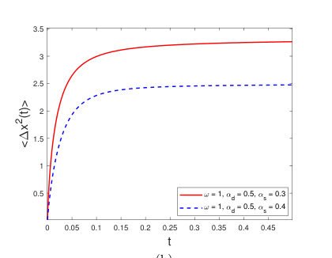
<figcaption class="paper-figure-caption"><b>Fig 4.</b> Figure 4: The stationary distribution (95) in panel (a) and the MSD (96) in panel (b) of the intermittent CTRW with the power-law jump and reset WTDs. The values of relevant model parameters are provided in the legend.</figcaption>
</figure>
<figure class="paper-figure-card">

<figcaption class="paper-figure-caption"><b>Fig 5.</b> Figure 5: The particle trajectories of intermittent CTRW under stochastic resetting to original position. The exponential jump and reset WTDs with frequency parameters λd = 1.2 and λs = 0.4 individually and the Gaussian distributed jump length with standard deviation σ = 1.</figcaption>
</figure>
</div>

<p><strong>Summary.</strong> This paper analyzes Intermittent Continuous-Time Random Walks (CTRWs) where movement is governed by a competition between random jumps and resets. It derives the governing equations and proves the existence of non-equilibrium stationary states. The work quantifies search efficiency by calculating the Mean First Arrival Time, showing the model's applicability to physical scenarios like animal foraging.</p>
<p><strong>Why it may be interesting.</strong> The study of non-equilibrium steady states and search efficiency in disordered media using generalized random walk models has connections to open quantum systems dynamics and energy landscape exploration.</p>
<details>
<summary>Detailed structure</summary>
<p><strong>Main problem.</strong> The paper investigates efficient search strategies in complex and disordered environments by modeling stochastic resetting.</p>
<p><strong>Main result.</strong> It proves the existence of non-equilibrium stationary states and calculates the Mean First Arrival Time (MFAT) for intermittent Continuous-Time Random Walks (CTRWs) under a renewal reset mechanism.</p>
<p><strong>Method.</strong> The analysis involves deriving and solving the governing equation and the Montroll-Weiss equation in Laplace and Fourier space for the particle density.</p>
<p><strong>Model / system.</strong> The model is an Intermittent CTRW where the next event (jump or reset) is governed by the minimum of two independent waiting times, $   au = \min{ au_d,   au_s}$, representing a competition mechanism.</p>
<p><strong>Key observables.</strong> Mean Square Displacements (MSDs), Mean First Arrival Time (MFAT), and the stationary particle density.</p>
<p><strong>Important parameters / regimes.</strong> The distributions of the jump and reset waiting times (e.g., exponential, power-law, Gaussian).</p>
<p><strong>Assumptions / limitations.</strong> The system proceeds with new waiting times regardless of previous histories after a renewal event, and the jump/reset waiting times are independent.</p>
<p><strong>Figures summary.</strong> Figures show the PDF of particles at the stationary state and the MSDs for various power-law jump and reset waiting time distributions.</p>
<p><strong>Paper structure.</strong> The paper develops the governing equation and Montroll-Weiss equation for the renewal resetting mechanism, analyzes specific distributions (exponential, power-law), and calculates key metrics like MSD and MFAT.</p>
</details>
<details>
<summary>Abstract</summary>
<p>Stochastic resetting as a practical and efficient search strategy in complex and disordered environments has long been a topic of interest to researchers. Based on the competition between jumping and resetting, this article proposes and investigates intermittent continuous-time random walks (CTRWs) under stochastic resetting, using the smaller waiting time for jump and reset as the renewal time, where the waiting times for both jump and reset can have arbitrary distributions. After each renewal event, the system will proceed with new waiting times for jump and reset regardless of their previous histories. We study the governing equation and Montroll-Weiss equation with renewal resetting, as well as the Markovian resetting for intermittent CTRWs. We prove the existence of non-equilibrium stationary states within the renewal reset mechanism when the jump and reset waiting times follow any exponential and power law distributions. For exponential and Gaussian distributed jump lengths, we examine the mean square displacements (MSDs) of particles to determine their monotonicity and asymptotic stability. Moreover, we calculate the first-arrival time to quantify search efficiency, and validate the intermittent CTRWs under renewal resetting lead to a finite mean first-arrival time (MFAT) to any fixed position for exponential jump and reset waiting time distributions (WTDs), power-law jump and exponential reset WTDs, as well as exponential jump and power-law reset WTDs. However, the MFAT diverges for power-law jump and reset WTDs. The intermittent CTRW model, which is based on the competition mechanism, can be applied to many physical scenarios, such as the foraging strategy of animals that return to their nests after an unsuccessful foraging attempt, or the work planning of intelligent robots that return to energy replenishment points after prolonged operation.</p>
</details>
<p><sub><a href="#top">↑ back to top</a></sub></p>

<p><a id="paper-2609.10390"></a></p>
<h3 id="field-quantization-in-rotating-frames-coordinate-covariance-and-the-circular-detector-response"><a href="http://arxiv.org/abs/2609.10390v1">Field quantization in rotating frames: coordinate covariance and the circular-detector response</a></h3>
<p><strong>Authors:</strong> Sidney Natzuka Junior, Carlos Augusto Domingues Zarro, Matheus dos Santos Soares<br>
<strong>Type:</strong> theory · <strong>Category:</strong> other · <strong>PDF:</strong> <a href="https://arxiv.org/pdf/2609.10390v1">https://arxiv.org/pdf/2609.10390v1</a><br>
<strong>Analysis basis:</strong> full PDF text, analyzed in chunks
<strong>Topic relevance:</strong> <code>quantum measurements</code> <strong>3/5</strong> · <code>Keldysh / 2PI / non-Gaussian methods</code> <strong>2/5</strong> · <code>Full counting statistics</code> <strong>1/5</strong> · <code>correlated / nonlocal dissipation</code> <strong>1/5</strong> · <code>driven-dissipative phase transition</code> <strong>1/5</strong> · <code>methods for driven-dissipative</code> <strong>1/5</strong> · <code>non-equilibrium universality</code> <strong>1/5</strong></p>
<div class="figure-strip-hint">↔ Scroll figures horizontally</div>
<div class="paper-figures-scroll">
<figure class="paper-figure-card">

<figcaption class="paper-figure-caption"><b>Fig 1.</b> FIG. 1. Massless circular-detector response in the Minkowski vacuum, at fixed proper acceleration ac, computed from the Hadamard-subtracted expression (110). (a) The excitation rate ˙F(E)/ac, as a function of E/ac, is nonzero for E &gt; 0, but it is not a Planck spectrum. (b) The gap-dependent inverse temperature acβeff(E), with βeff(E) = E−1 ln[ ˙F(−E)/ ˙F(E)]. A KMS state would give a horizontal curve; 2π, the value for linear acceleration at the same proper acceleration, is shown only as a reference. Line color and dashing both identify the tangential speed.</figcaption>
</figure>
</div>

<p><strong>Summary.</strong> This paper rigorously analyzes quantum field quantization and detector response in rotating reference frames, comparing different mathematical formalisms. It establishes that even when the concept of a globally selected vacuum state breaks down due to the rotating geometry, a local detector still registers a measurable, non-thermal response to the vacuum fluctuations. This demonstrates a deep consistency between local measurements and global field theory concepts.</p>
<p><strong>Why it may be interesting.</strong> This work is highly relevant to open quantum systems and quantum optics as it rigorously analyzes how local measurements (detector response) can reveal physical effects (like vacuum fluctuations) even when global symmetries or ground states are ill-defined due to non-inertial motion.</p>
<details>
<summary>Detailed structure</summary>
<p><strong>Main problem.</strong> The paper provides a unified analysis of scalar-field quantization and detector response in relativistic rotating frames, comparing rigid and Trocheris-Takeno (TT) descriptions in unbounded Minkowski spacetime.</p>
<p><strong>Main result.</strong> The authors show that while neither rotating time flow selects a global ground state, a circular Unruh-DeWitt detector in the Minkowski vacuum exhibits a stationary, non-thermal response, demonstrating consistency between vanishing Bogoliubov mixing and detector excitation.</p>
<p><strong>Method.</strong> The analysis involves comparing quantization modes (rigid vs. TT) using Bogoliubov coefficients, calculating the detector response using Hadamard subtraction, and analyzing the spectral properties of the vacuum.</p>
<p><strong>Model / system.</strong> The system is a real scalar field quantized in the Minkowski vacuum, coupled to a two-level Unruh–DeWitt detector. The analysis is performed in relativistic rotating frames, comparing different quantization formalisms.</p>
<p><strong>Key observables.</strong> Bogoliubov beta coefficients, detector excitation rate spectrum, Minkowski Wightman function, and the detector response function.</p>
<p><strong>Important parameters / regimes.</strong> The analysis is performed in the Minkowski vacuum, focusing on the comparison between inertial and rotating coordinate representations.</p>
<p><strong>Assumptions / limitations.</strong> The analysis assumes the use of the Unruh–DeWitt detector model and focuses on the vacuum state in 3+1 dimensions.</p>
<p><strong>Paper structure.</strong> The paper is structured around distinguishing three often-conflated issues: state representation in rotating coordinates, selection of a global ground state by time evolution, and the detector response to the vacuum. It proceeds by showing that while the first two can fail, the third (detector response) remains non-zero and non-thermal.</p>
</details>
<details>
<summary>Abstract</summary>
<p>We provide a unified analysis of scalar-field quantization and detector response in relativistic rotating frames, comparing rigid and Trocheris-Takeno (TT) descriptions in unbounded Minkowski spacetime. We distinguish three questions that are often conflated: (i) how a fixed quantum state is represented in rotating coordinates, (ii) whether rotating time evolution selects a global ground state, and (iii) how a rotating detector responds to the vacuum. Coordinate-transformed rigid and TT modes span the same positive-frequency subspace as inertial modes: their Bogoliubov beta coefficients vanish and their mode sums reproduce the Minkowski Wightman function. Neither rotating time flow selects a global scalar ground state, although for different reasons: the rigid generator is not globally timelike and is unbounded below, whereas TT time translation is not a Killing symmetry. Nevertheless, a circular Unruh-DeWitt detector in the Minkowski vacuum has a stationary, nonzero response. We relate this response to negative corotating frequencies, evaluate it after an explicit Hadamard subtraction, and show that it is nonthermal. Thus vanishing Bogoliubov mixing, the absence of a symmetry-selected rotating vacuum, and detector excitation are mutually consistent.</p>
</details>
<p><sub><a href="#top">↑ back to top</a></sub></p>

<p><a id="paper-2609.09599"></a></p>
<h3 id="information-geometric-bounds-on-nonequilibrium-relaxation-in-quantum-markov-dynamics"><a href="http://arxiv.org/abs/2609.09599v1">Information-geometric bounds on nonequilibrium relaxation in quantum Markov dynamics</a></h3>
<p><strong>Authors:</strong> Xiao-Kan Guo, Zhiqiang Huang<br>
<strong>Type:</strong> theory · <strong>Category:</strong> statistical mechanics · <strong>PDF:</strong> <a href="https://arxiv.org/pdf/2609.09599v1">https://arxiv.org/pdf/2609.09599v1</a><br>
<strong>Analysis basis:</strong> full PDF text, analyzed in chunks
<strong>Topic relevance:</strong> <code>non-equilibrium universality</code> <strong>3/5</strong> · <code>Keldysh / 2PI / non-Gaussian methods</code> <strong>2/5</strong> · <code>methods for driven-dissipative</code> <strong>2/5</strong> · <code>correlated / nonlocal dissipation</code> <strong>1/5</strong> · <code>driven-dissipative phase transition</code> <strong>1/5</strong></p>
<div class="figure-strip-hint">↔ Scroll figures horizontally</div>
<div class="paper-figures-scroll">
<figure class="paper-figure-card">
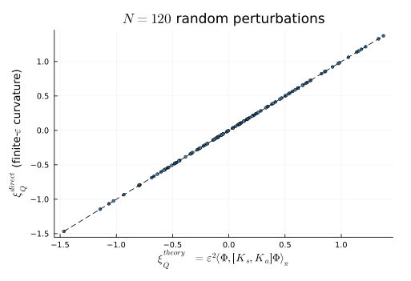
<figcaption class="paper-figure-caption"><b>Fig 1.</b> FIG. 1. Exact identity on the qutrit: the definition-based di- rect extraction ξdirect Q (complex-step mixed fourth derivative)</figcaption>
</figure>
<figure class="paper-figure-card">
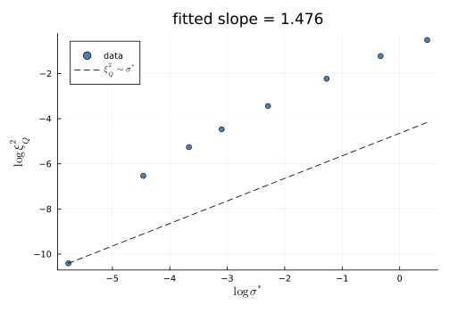
<figcaption class="paper-figure-caption"><b>Fig 2.</b> FIG. 4. Drive scaling: log ξ2 Q versus log σ∗for Ωd ∈[0.05, 1.2]</figcaption>
</figure>
<figure class="paper-figure-card">

<figcaption class="paper-figure-caption"><b>Fig 3.</b> FIG. 2. Normalized ratio at fixed generator: R[Φ(θ)] = cos2 θΦ and Q[Φ(θ)] = 2|ξQ|/(ϵ2νBKM∥Φ∥2π) along the family con- necting the two eigendirections of [K‡, K] with eigenvalues ±νBKM; Q sweeps [0.013, 0.9999] while νBKM = 4.56 is con- stant.</figcaption>
</figure>
<figure class="paper-figure-card">

<figcaption class="paper-figure-caption"><b>Fig 4.</b> FIG. 3. Semiclassical entropy-production bound: his- togram of ξ2 Q/(4ϵ4T3Σ σ∗) over 128 perturbations of the two- dimensional anisotropic NESS; all values lie below 1 (maxi- mum 0.089).</figcaption>
</figure>
</div>

<p><strong>Summary.</strong> This work establishes a quantum information-geometric framework to bound the deviation from equilibrium during short-time relaxation in quantum Markov systems. By generalizing classical inequalities, the authors derive an exact identity linking the relaxation curvature correction to the commutator structure of the system's generator. This provides a powerful, general tool for analyzing non-equilibrium dynamics in quantum physics.</p>
<p><strong>Why it may be interesting.</strong> It provides a rigorous, information-geometric framework for understanding non-equilibrium steady states, linking fundamental concepts like generator non-normality to measurable relaxation bounds.</p>
<details>
<summary>Detailed structure</summary>
<p><strong>Main problem.</strong> The paper investigates the quantum information-geometric structure governing short-time nonequilibrium relaxation in quantum Markov dynamics.</p>
<p><strong>Main result.</strong> It derives an exact identity showing the nonequilibrium curvature correction is related to the commutator of the dissipative and transport parts of the generator, and establishes a Cauchy-Schwarz bound for this correction.</p>
<p><strong>Method.</strong> The analysis uses the von Neumann relative entropy as a quantum divergence, linearizes the dynamics around the steady state, and employs the Kubo-Mori map to define a BKM inner product.</p>
<p><strong>Model / system.</strong> The study focuses on Quantum Markov Semigroups (QMS) dynamics, analyzing relaxation from a perturbed state towards a stationary state, and testing the results on qubit and qutrit models.</p>
<p><strong>Key observables.</strong> Nonequilibrium correction to the short-time relaxation curvature ($\xi_Q$), BKM non-normality, and the ratio $R[\Phi]$ quantifying sector coupling.</p>
<p><strong>Important parameters / regimes.</strong> Perturbation amplitude ($\epsilon$), temperature ($T$), and the full-rank nature of the stationary state.</p>
<p><strong>Assumptions / limitations.</strong> The analysis is based on the quadratic expansion of the relative entropy and assumes the QMS has a full-rank stationary state.</p>
<p><strong>Figures summary.</strong> Figures confirm the identity and the bound numerically for a 2D anisotropic NESS, showing the ratio $\xi^2_Q / (4\epsilon^4 T^3 \Sigma \sigma^*)$ remains below 1.</p>
<p><strong>Paper structure.</strong> The paper develops the theory by generalizing classical inequalities, deriving the quadratic curvature identity using the BKM inner product, establishing the Cauchy-Schwarz bound, and verifying the results in various physical limits and models.</p>
</details>
<details>
<summary>Abstract</summary>
<p>In this paper, we study the quantum information-geometric structure underlying short-time nonequilibrium relaxation in quantum Markov dynamics, and derive bounds on the nonequilibrium correction to the short-time relaxation curvature. These bounds generalize the information-geometric structure underlying Auconi's classical nonequilibrium relaxation inequality to quantum Markov dynamics. We consider the von Neumann relative entropy as quantum divergence, and parametrize perturbations through the Kubo-Mori map, which converts the second-order expansion of the relative entropy into the Bogoliubov-Kubo-Mori (BKM) inner product at all temperatures. For a quantum Markov semigroup with full-rank stationary state, the induced tangent-space generator admits a canonical decomposition into a BKM-symmetric and a BKM-antisymmetric part, and the leading nonequilibrium curvature correction takes the exact form of the expectation of the commutator between the dissipative and the transport part of the generator. This correction is bounded by the product of a BKM-symmetric dissipative activity and a transport-sector activity. The bound is verified on a noncommuting qubit model and a driven-dissipative qutrit, and the full chain is confirmed numerically on a two-dimensional Fokker-Planck steady state. In the high-temperature and overdamped limit the quantum formula reduces to the position-space Fokker-Planck expression and reproduces Auconi's entropy-production bound with the correct temperature factor.</p>
</details>
<p><sub><a href="#top">↑ back to top</a></sub></p>

<p><a id="paper-2609.09779"></a></p>
<h3 id="split-step-dirac-cellular-automata-for-continuous-time-dirac-dynamics-on-finite-spatial-lattices"><a href="http://arxiv.org/abs/2609.09779v1">Split-Step Dirac Cellular Automata for Continuous-Time Dirac Dynamics on Finite Spatial Lattices</a></h3>
<p><strong>Authors:</strong> Wei-Ting Wang, Pei-Ming Ho, Ching-Ray Chang<br>
<strong>Type:</strong> both · <strong>Category:</strong> quantum information and computing · <strong>PDF:</strong> <a href="https://arxiv.org/pdf/2609.09779v1">https://arxiv.org/pdf/2609.09779v1</a><br>
<strong>Analysis basis:</strong> full PDF text, analyzed in chunks
<strong>Topic relevance:</strong> <code>QC/QI experiment</code> <strong>3/5</strong> · <code>analog quantum simulation</code> <strong>3/5</strong> · <code>methods for driven-dissipative</code> <strong>2/5</strong> · <code>interference shaping light</code> <strong>1/5</strong></p>
<div class="figure-strip-hint">↔ Scroll figures horizontally</div>
<div class="paper-figures-scroll">
<figure class="paper-figure-card">

<figcaption class="paper-figure-caption"><b>Fig 1.</b> FIG. 1. (a) Comparison of DCA and SDCA through spacetime diagrams and velocity expectation values. The initial state of the particle is |Ψ(t = 0)⟩= 1 √</figcaption>
</figure>
<figure class="paper-figure-card">

<figcaption class="paper-figure-caption"><b>Fig 2.</b> FIG. 2. Comparison of Dirac dynamics simulated using the DCA and the SDCA (M = 2) against the exact continuous-time limit of a highly localized state |Ψ(0)⟩= (cos(θ/2)|0⟩c +eiϕ sin(θ/2)|1⟩c)⊗|x = 0⟩with mass m = π/8 on a finite spatial lattice. Top panels: Time evolution of the Pauli matrix expectation values (⟨σx⟩, ⟨σy⟩, ⟨σz⟩) and the entanglement entropy S with (a) θ = π/2, ϕ = 0, and (b) θ = π/2, ϕ = π/2. Bottom panels: Heatmaps displaying ⟨σz⟩and S at time step t = 5 as a function of the initial state angles θ and ϕ for the (c) exact continuous limit, (d) DCA, and (e) SDCA.</figcaption>
</figure>
<figure class="paper-figure-card">
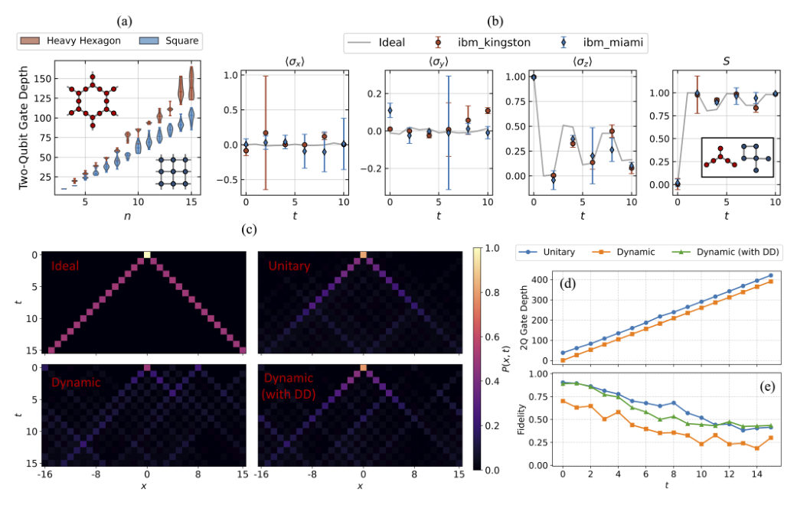
<figcaption class="paper-figure-caption"><b>Fig 3.</b> FIG. 3. Experimental results of the DCA for a highly localized initial state. Top Panel: Comparison of results executed on heavy hexagon (ibm kingston) and square (ibm miami) lattice backends. (a) Two-qubit gate depth scaling for single-step DCA circuits as a function of the external space size n. Insets illustrate the physical connectivity graphs of the respective hardware topologies. (b) Time evolution of the three Pauli expectation values (⟨σx⟩, ⟨σy⟩, ⟨σz⟩) and the entanglement entropy (S) for the particle state |Ψ(0)⟩= |0⟩c ⊗|x = 0⟩with mass m = π/2. The insets show the specific physical qubit mappings on the devices. Bottom Panel: Performance comparison of standard unitary and dynamic...</figcaption>
</figure>
<figure class="paper-figure-card">

<figcaption class="paper-figure-caption"><b>Fig 4.</b> FIG. 4. Experimental results of the SDCA for a highly localized initial state executed on the ibm aachen quantum processor. (a) Time evolution of the internal space Pauli expectation values (⟨σx⟩, ⟨σy⟩, ⟨σz⟩) and the corresponding entanglement entropy (S) for the initial state |Ψ(0)⟩= |0⟩c ⊗|x = 0⟩with mass m = π/2. (b) and (c) Experimental spacetime probability diagrams, P(x, t) of the initial state |Ψ(0)⟩c = 1 √</figcaption>
</figure>
<figure class="paper-figure-card">
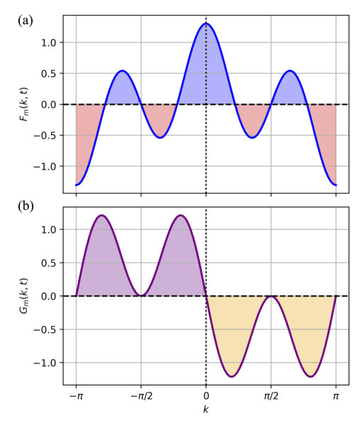
<figcaption class="paper-figure-caption"><b>Fig 5.</b> FIG. 5. The time-dependent functions (a) Fm(k, t) and (b) Gm(k, t) plotted over the Brillouin zone with t = 2. Both functions exhibit anti-symmetry under a k →k + π momen- tum shift.</figcaption>
</figure>
</div>

<p><strong>Summary.</strong> This paper introduces the Split-Step Dirac Cellular Automaton (SDCA) to overcome a fundamental limitation of standard DCA: artificial phase-matching symmetries that suppress key quantum interference effects. By employing a fractional-step evolution scheme, SDCA enables accurate simulation of continuous-time Dirac dynamics at fixed spatial resolution. The authors demonstrate this capability both analytically and experimentally on quantum processors, providing a practical tool for studying relativistic quantum physics on near-term quantum hardware.</p>
<p><strong>Why it may be interesting.</strong> The work directly addresses the practical limitations of simulating relativistic quantum dynamics on current quantum hardware by proposing a method (SDCA) that enhances temporal resolution while keeping the spatial register fixed, which is crucial for many quantum simulation tasks.</p>
<details>
<summary>Detailed structure</summary>
<p><strong>Main problem.</strong> Standard Dirac Cellular Automata (DCA) suffer from artificial phase-matching symmetries on finite grids, suppressing key interference phenomena like Zitterbewegung.</p>
<p><strong>Main result.</strong> The proposed Split-Step DCA (SDCA) breaks this symmetry, successfully recovering continuous-time interference dynamics and allowing for improved temporal resolution on near-term quantum devices.</p>
<p><strong>Method.</strong> The authors use a Trotterized fractional-step scheme in the momentum representation to implement SDCA, which is then benchmarked on actual IBM Quantum processors.</p>
<p><strong>Model / system.</strong> The system models Dirac dynamics for a spin-1/2 particle on a finite spatial lattice. The Hamiltonian is related to the continuous Dirac equation, and the dynamics are approximated using both standard DCA and the novel SDCA.</p>
<p><strong>Key observables.</strong> Zitterbewegung oscillations, entanglement entropy ($S$), and the expectation value of velocity ($\langle V 
angle$).</p>
<p><strong>Important parameters / regimes.</strong> Fixed spatial discretization ($\delta x$) while improving temporal resolution ($\delta t$), and the number of fractional steps ($M$).</p>
<p><strong>Assumptions / limitations.</strong> The standard DCA requires $\delta t = \delta x$, limiting temporal resolution; the SDCA implementation on NISQ devices requires managing trade-offs between circuit depth and error rates.</p>
<p><strong>Figures summary.</strong> Figures compare spacetime diagrams and velocity expectation values for DCA vs. SDCA, showing SDCA recovers dynamics. Other figures detail quantum circuit implementations for QFT and show time evolution of observables on quantum hardware.</p>
<p><strong>Paper structure.</strong> The paper first identifies the limitations of DCA due to phase-matching symmetries. It then introduces and details the SDCA formulation using fractional steps. The core of the work involves benchmarking SDCA by simulating observables (like entanglement entropy and velocity) on quantum hardware, comparing results against the continuous limit.</p>
</details>
<details>
<summary>Abstract</summary>
<p>Dirac Cellular Automata (DCA) provide a framework for simulating Dirac dynamics, yet the rigid coupling between spatial and temporal resolutions can introduce artificial phase-matching symmetries on finite grids that suppress interference phenomena such as Zitterbewegung. In this work, we propose a Split-Step Dirac Cellular Automaton (SDCA) that enables continuous-time Dirac evolution at fixed spatial discretization. By employing a Trotterized fractional-step scheme in the momentum representation, SDCA breaks the phase-matching cancellation present in the standard DCA and recovers the interference dynamics of the continuous-time limit. We benchmark the SDCA through analytical and numerical studies and demonstrate its implementation on IBM Quantum processors. Despite the increased circuit depth required for finer temporal resolution, the NISQ implementation reproduces the characteristic velocity oscillations and entanglement-entropy dynamics of the continuous-time model. We further investigate hardware-topology trade-offs and dynamic circuit implementations of the Quantum Fourier Transform (QFT), highlighting the competing effects of gate errors, measurement, and feed-forward latency. These results demonstrate that SDCA provides a practical framework for improving temporal resolution while maintaining a fixed spatial quantum register, enabling the exploration of relativistic quantum dynamics on near-term quantum devices.</p>
</details>
<p><sub><a href="#top">↑ back to top</a></sub></p>

<p><a id="paper-2609.09457"></a></p>
<h3 id="a-block-tensor-train-burer-monteiro-framework-for-low-rank-quantum-state-tomography"><a href="http://arxiv.org/abs/2609.09457v1">A Block Tensor Train Burer-Monteiro Framework for Low-Rank Quantum State Tomography</a></h3>
<p><strong>Authors:</strong> Shakir Showkat Sofi, Charlotte Vermeylen, Fatemeh Mohammadi, Lieven De Lathauwer<br>
<strong>Type:</strong> theory · <strong>Category:</strong> numerical methods · <strong>PDF:</strong> <a href="https://arxiv.org/pdf/2609.09457v1">https://arxiv.org/pdf/2609.09457v1</a><br>
<strong>Analysis basis:</strong> full PDF text, analyzed in chunks
<strong>Topic relevance:</strong> <code>methods for driven-dissipative</code> <strong>3/5</strong> · <code>analog quantum simulation</code> <strong>2/5</strong> · <code>quantum measurements</code> <strong>2/5</strong></p>
<div class="figure-strip-hint">↔ Scroll figures horizontally</div>
<div class="paper-figures-scroll">
<figure class="paper-figure-card">
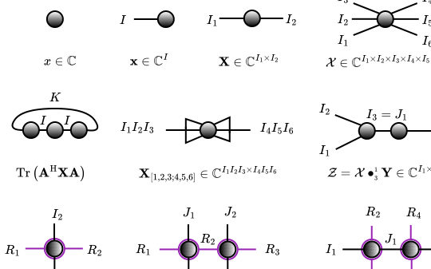
<figcaption class="paper-figure-caption"><b>Fig 1.</b> Fig. 2.1: Basic tensor network diagrams. In the bottom row, double-ring nodes rep- resent block matrices with purple block-layout edges and black inner-matrix edges; block matrices are linked by a purple edge in the strong Kronecker product and a black edge in the C-product.</figcaption>
</figure>
<figure class="paper-figure-card">
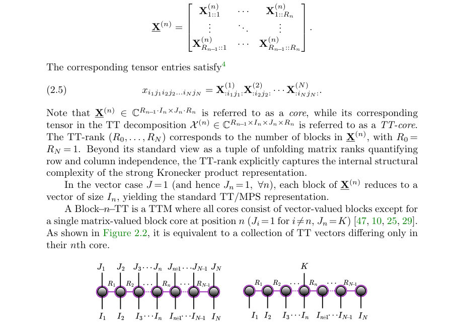
<figcaption class="paper-figure-caption"><b>Fig 2.</b> Fig. 2.2: (Left) TTM representation of a matrix X ∈ CI1I2···IN×J1J2···JN . (Right) Block−n−TT representation of a tall matrix X ∈CI1I2···IN×K, or equiva- lently, as a collection of K TT vectors that share all cores, except for the nth core.</figcaption>
</figure>
<figure class="paper-figure-card">

<figcaption class="paper-figure-caption"><b>Fig 3.</b> Figure 3.2 visualizes the tensor network diagram for this operation: the overall contraction between the Block-TT parameterized density operator and the (TTM) measurement operators (left), alongside its equivalent effective-operator form (right).</figcaption>
</figure>
<figure class="paper-figure-card">
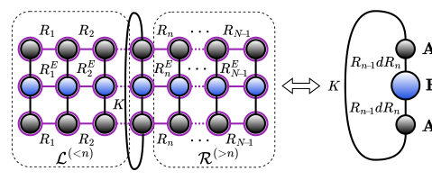
<figcaption class="paper-figure-caption"><b>Fig 4.</b> Fig. 3.2: (Left) Core-wise contraction of the tensor network representing the ex- pectation value computation, i.e., Tr(AH TT ETT ATT). (Right) Equivalent tensor net- work representation of the same operation in terms of an effective operator, i.e., Tr(A(n)H [1,2,4;3] E(n) eff A(n) [1,2,4;3]), where E(n) eff = AH ̸=n ETT A̸=n ∈CRn−1dRn×Rn−1dRn.</figcaption>
</figure>
<figure class="paper-figure-card">

<figcaption class="paper-figure-caption"><b>Fig 5.</b> Fig. 3.3: Optimal ordering of the tensor network contractions needed to compute the left and right environments recursively; see (3.6).</figcaption>
</figure>
</div>

<p><strong>Summary.</strong> This paper introduces a novel, scalable framework for Quantum State Tomography using a Block Tensor Train (Block-TT) factorization. By parameterizing the density matrix in this low-rank tensor-network format, it overcomes the exponential scaling problem inherent in standard QST. The resulting methods allow for accurate state reconstruction of large quantum systems using efficient, physically constrained tensor-network algorithms.</p>
<p><strong>Why it may be interesting.</strong> This work is highly relevant to AMO physics and open quantum systems because it provides a scalable numerical tool (DMRG/Tensor Networks) to characterize the full state ($
ho$) of complex, interacting quantum systems, moving beyond simple expectation value measurements.</p>
<details>
<summary>Detailed structure</summary>
<p><strong>Main problem.</strong> The primary challenge is performing Quantum State Tomography (QST) for large quantum systems, which suffers from an exponential increase in computational cost with the number of qubits.</p>
<p><strong>Main result.</strong> The authors propose a Block Tensor Train (Block-TT) Burer-Monteiro framework that parameterizes the density matrix, reducing the optimization variables from exponential to linear in the number of qubits while guaranteeing physical constraints.</p>
<p><strong>Method.</strong> The core method involves representing the density matrix using a Block-TT factorization, which is a tensor-network approach analogous to the Burer-Monteiro factorization. They develop novel single-site and two-site DMRG algorithms that operate directly on this compressed parameterization.</p>
<p><strong>Model / system.</strong> The system is a general quantum system whose state is described by a density matrix ($
ho$). The framework is designed to handle $N$-qubit or $N$-qudit systems, assuming the state is low-rank and can be accurately approximated by a tensor network structure.</p>
<p><strong>Key observables.</strong> The primary observable is the density matrix ($
ho$), and the goal is to reconstruct it from measurement statistics $\{y_m\}$ derived from measurement operators $\{E_m\}$.</p>
<p><strong>Important parameters / regimes.</strong> The key parameters involve the rank of the state, the window width ($w$), and the stride ($s$) used in local measurement operator generation for 1D chains.</p>
<p><strong>Assumptions / limitations.</strong> The framework assumes that the quantum state is low-rank and can be accurately represented by the Block-TT factorization. Furthermore, accurate reconstruction requires sufficient spatial overlap between measurement windows.</p>
<p><strong>Figures summary.</strong> The notes mention figures illustrating tensor network diagrams (Block-TT structure) and tables comparing reconstruction fidelity versus measurement overlap/budget for different window-stride configurations.</p>
<p><strong>Paper structure.</strong> The paper first establishes the problem of QST and its exponential scaling. It then introduces the Block-TT Burer-Monteiro framework as a solution. The methodology details the development of DMRG algorithms operating on this compressed format, followed by numerical experiments demonstrating its efficiency and accuracy compared to conventional methods.</p>
</details>
<details>
<summary>Abstract</summary>
<p>Quantum state tomography is a fundamental technique for estimating the state of a quantum system from measured data and plays a crucial role in evaluating the performance of quantum devices. However, standard estimation methods become computationally prohibitive as the system size increases due to the exponential growth of the density matrix, describing a quantum state, with the number of qubits. We propose a low-rank tensor-network framework for mixed-state quantum state tomography based on a block tensor train (Block-TT) factorization. Specifically, the density matrix is represented as the contraction of a Block-TT with its Hermitian transpose, yielding a TT analogue of the Burer-Monteiro factorization. This parameterization guarantees Hermiticity and positive semidefiniteness by construction while compressing the number of optimization variables from exponential to linear in the number of qubits. Building on this representation, we develop single-site and two-site density matrix renormalization group (DMRG) algorithms for estimating quantum states from compressed measurements. The resulting methods operate directly on the compressed parameterization, support adaptive rank refinement, and exploit efficient tensor-network contractions for expectation-value evaluation. The framework is applicable to a broad class of low-rank quantum states, including pure states, nearly pure states, and ground states that admit accurate tensor-network approximations. Numerical experiments demonstrate accurate state reconstruction from limited measurements together with substantial reductions in memory requirements and computational cost compared with conventional low-rank tomography methods.</p>
</details>
<p><sub><a href="#top">↑ back to top</a></sub></p>

<p><a id="paper-2609.09498"></a></p>
<h3 id="gap-controlled-thermalization-in-a-ssh-model-version-of-the-fermi-pasta-ulam-tsingou-chain"><a href="http://arxiv.org/abs/2609.09498v1">Gap-controlled thermalization in a SSH model version of the Fermi-Pasta-Ulam-Tsingou chain</a></h3>
<p><strong>Authors:</strong> José A. Aké, Gerardo G. Naumis<br>
<strong>Type:</strong> theory · <strong>Category:</strong> statistical mechanics · <strong>PDF:</strong> <a href="https://arxiv.org/pdf/2609.09498v1">https://arxiv.org/pdf/2609.09498v1</a><br>
<strong>Analysis basis:</strong> full PDF text, analyzed in chunks
<strong>Topic relevance:</strong> <code>scars &amp; prethermalization</code> <strong>3/5</strong> · <code>Frenkel-Kontorova</code> <strong>2/5</strong> · <code>analog quantum simulation</code> <strong>1/5</strong> · <code>non-equilibrium universality</code> <strong>1/5</strong></p>
<div class="figure-strip-hint">↔ Scroll figures horizontally</div>
<div class="paper-figures-scroll">
<figure class="paper-figure-card">
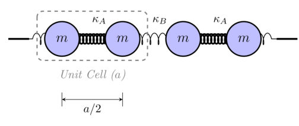
<figcaption class="paper-figure-caption"><b>Fig 1.</b> Figure 1. Schematic of the alternating FPUT chain with spring con- stants 𝜅𝐴= 1 + Δ𝜅and 𝜅𝐵= 1 −Δ𝜅connecting identical masses. As 𝜅𝐵→0, the system is dimerized in pairs of masses joined by the non linear spring with stiffness 𝜅𝐴. The optical branch corresponds to the oscillations of such 𝑁/2 dimers, while the other 𝑁/2 modes become the center of mass movement of each dimer, with zero frequency os- cillations. Thus the system becomes flexible in the sense of rigidity theory as the acoustic branch is made by 𝑁/2 floppy modes.</figcaption>
</figure>
<figure class="paper-figure-card">
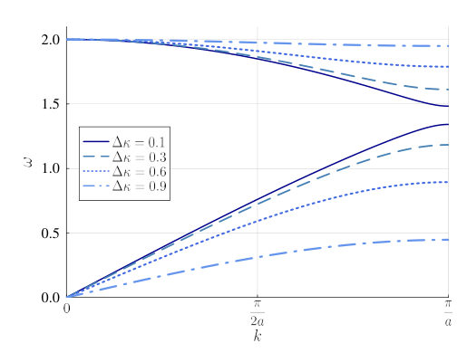
<figcaption class="paper-figure-caption"><b>Fig 2.</b> Figure 2. Dispersion relation [Eq. (10)] for varying Δ𝜅, showing the frequency gap at 𝑘= 𝜋/𝑎plotted in the reduced zone scheme. The gap grows as Δ𝜅grows, setting the frequency barrier that must be bridged by nonlinear resonances for interbranch energy transfer to occur.</figcaption>
</figure>
<figure class="paper-figure-card">

<figcaption class="paper-figure-caption"><b>Fig 3.</b> Figure 3. Modal energy heat maps for 𝛼-type nonlinearity, 𝑁= 64, 𝜖= 0.0069. 𝛼= 0.1 Top panel: FBC (first-mode excitation). Bottom panel: PBC (second-mode excitation). Observe how for the Δ𝜅= 0.5 case, the highest frequency optical mode is excited due to the first available umklapp process.</figcaption>
</figure>
<figure class="paper-figure-card">

<figcaption class="paper-figure-caption"><b>Fig 4.</b> Figure 4. Time-averaged spectral entropy ¯𝑆(𝑡) vs. time for FBC, first- mode excitation, 𝛼= 0.1, 𝑁= 64, 𝜖= 0.0069. Below the isolation threshold (Δ𝜅= 0.05, thick blue), the system shows relaxation within 𝑡∼102 periods. At and above the threshold (Δ𝜅= 0.5 and 0.7, thin red), ¯𝑆(𝑡) saturates at lower plateaus.</figcaption>
</figure>
<figure class="paper-figure-card">

<figcaption class="paper-figure-caption"><b>Fig 5.</b> Figure 7. Contour plot of the resonance condition manifold |𝜔−(𝑘1)+ 𝜔−(𝑘2) −𝜔+(𝑘3)| &lt; 𝛾for 𝛾&lt;&lt; 10−6 for different Δ𝜅values and for the 𝛼-type nonlinearity. This shows how the accessible resonant triads depend on Δ𝜅. The momentum conservation and gap width controls the density of resonances connecting acoustic and optical modes. The resonance manifold disappears as Δ𝜅→0.5, establishing a hard gap-isolation threshold. The value Δ𝜅= 0.5 signals the emergence of the first possible umklapp process. The shaded area corresponds to the possible umklapp processes allowed by momentum conservation. The red dotted lines indicates the limits of such region.</figcaption>
</figure>
</div>

<p><strong>Summary.</strong> This work examines how spectral gaps in a dimerized FPUT chain control nonlinear energy transport and thermalization. By simulating the system, the authors find that the gap creates a sharp threshold, effectively isolating energy modes above this point. This suggests a general mechanism for controlling energy flow in topologically gapped nonlinear lattices.</p>
<p><strong>Why it may be interesting.</strong> The concept of a gap acting as a tunable filter for energy transport in nonlinear lattices is highly relevant to understanding energy dissipation and thermalization in complex quantum or classical many-body systems.</p>
<details>
<summary>Detailed structure</summary>
<p><strong>Main problem.</strong> The study investigates whether a spectral gap in a dimerized classical anharmonic lattice hinders or promotes long-time thermalization.</p>
<p><strong>Main result.</strong> The phononic gap acts as a tunable, momentum-selective filter for nonlinear energy transport, establishing a sharp isolation threshold that controls the onset of energy mixing.</p>
<p><strong>Method.</strong> The authors use long-time symplectic simulations to track modal energies and spectral entropy, analyzing three-wave scattering resonances in the classical Hamiltonian.</p>
<p><strong>Model / system.</strong> The system is a dimerized Fermi-Pasta-Ulam-Tsingou (FPUT) chain, modeled as a classical SSH analogue with alternating spring constants and cubic nonlinearity. The dynamics are governed by a Hamiltonian involving kinetic and potential energy terms.</p>
<p><strong>Key observables.</strong> Spectral entropy S(t), modal energies E_{k,\sigma}(t), and the magnitude of three-wave coupling coefficients $|\Gamma_{\sigma_1} \sigma_2 \sigma_3|$.</p>
<p><strong>Important parameters / regimes.</strong> Dimerization strength ($\Delta\kappa$), nonlinearity type ($\alpha$-type/cubic), and boundary conditions (Fixed vs. Periodic).</p>
<p><strong>Assumptions / limitations.</strong> The analysis focuses on the weakly nonlinear regime and utilizes the classical Hamiltonian framework, treating the gap as the primary control mechanism.</p>
<p><strong>Figures summary.</strong> Figures illustrate the energy dispersion relation showing the gap opening at the Brillouin zone boundary, and heatmaps show the magnitude of three-wave coupling coefficients depending on the dimerization strength.</p>
<p><strong>Paper structure.</strong> The paper first establishes the model and the gap's existence. It then analyzes the energy cascade and entropy evolution under varying dimerization strengths, identifying the critical threshold where energy transfer is suppressed by the gap.</p>
</details>
<details>
<summary>Abstract</summary>
<p>In classical anharmonic lattices, the resonance structure driving nonlinear mode mixing is reshaped by band gaps. However, it remains unclear whether a spectral gap hinders or promotes long-time thermalization. Here we study a dimerized Fermi-Pasta-Ulam-Tsingou chain - a classical SSH model analogue with alternating spring constants - and quantify how the acoustic-optical gap controls relaxation under alpha-type (cubic) nonlinearity. Tracking modal energies and spectral entropy via long-time symplectic simulations, we find a sharp isolation threshold when the dimerization strength reaches half its maximum value, set by the onset of the first umklapp process that allows two zone-boundary acoustic phonons to fuse into a zone-center optical phonon; below this threshold, three-wave acoustic-acoustic-optical scattering activates the optical branch on timescales of order 1e4 oscillation periods, while above it the bands remain dynamically isolated. We further show that boundary conditions reshape this picture, producing long-lived sticky states for specific mode excitations. These results establish the phononic gap as a tunable, momentum-selective filter for nonlinear energy transport, suggesting a general route to controlling thermalization in dimerized or topologically gapped nonlinear lattices.</p>
</details>
<p><sub><a href="#top">↑ back to top</a></sub></p>

<p><a id="paper-2609.09291"></a></p>
<h3 id="spectral-core-tail-architecture-for-locally-certified-gibbs-state-preparation"><a href="http://arxiv.org/abs/2609.09291v1">Spectral Core-Tail Architecture for Locally Certified Gibbs-State Preparation</a></h3>
<p><strong>Authors:</strong> Rui-Hao Li<br>
<strong>Type:</strong> theory · <strong>Category:</strong> statistical mechanics · <strong>PDF:</strong> <a href="https://arxiv.org/pdf/2609.09291v1">https://arxiv.org/pdf/2609.09291v1</a><br>
<strong>Analysis basis:</strong> full PDF text, analyzed in chunks
<strong>Topic relevance:</strong> <code>analog quantum simulation</code> <strong>3/5</strong> · <code>Keldysh / 2PI / non-Gaussian methods</code> <strong>2/5</strong> · <code>methods for driven-dissipative</code> <strong>2/5</strong></p>
<div class="figure-strip-hint">↔ Scroll figures horizontally</div>
<div class="paper-figures-scroll">
<figure class="paper-figure-card">

<figcaption class="paper-figure-caption"><b>Fig 1.</b> FIG. 1. SCTA architecture in a purification-based implemen- tation. The spectral core first loads amplitudes p</figcaption>
</figure>
<figure class="paper-figure-card">

<figcaption class="paper-figure-caption"><b>Fig 2.</b> FIG. 2. Physical- and core-frame representation of a deformation of an exact anchor. Adding λV deforms H0 into Hλ, and conjugation by the anchor tail U0 expresses the deformed Hamiltonian as HC,0 + λVC in the core frame. The correction Wλ is chosen so that the transformed core-frame Hamiltonian separates into the corrected loadable core HC,λ and the residual Rλ. Equivalently, the corrected physical tail is Uλ = U0Wλ.</figcaption>
</figure>
<figure class="paper-figure-card">
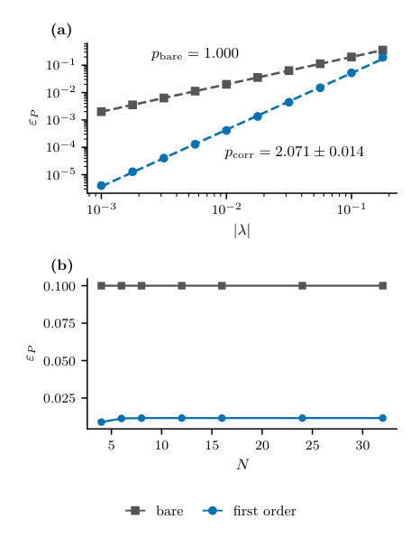
<figcaption class="paper-figure-caption"><b>Fig 3.</b> FIG. 3. Local residual scaling for the graph-stabilizer bench- mark. (a) Pauli incident strength εP of the bare and first-order residuals versus |λ| at N = 12; markers are the computed val- ues, dashed lines are power-law fits over the complete sampled range, and the adjacent labels give the fitted exponents, includ- ing one-standard-error uncertainties. (b) Incident strength versus system size at fixed λ = 0.05, showing that the first- order result saturates by N = 12 in the tested size sequence. The bare and first-order constructions are indicated by gray squares and blue circles, respectively.</figcaption>
</figure>
<figure class="paper-figure-card">
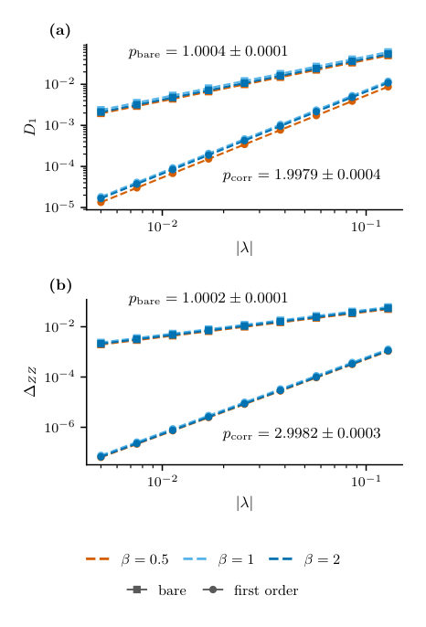
<figcaption class="paper-figure-caption"><b>Fig 4.</b> FIG. 4. Physical local Gibbs-state accuracy at N = 8. (a) Maximum trace-norm distance D1 between contiguous two- site marginals of the exact Gibbs state and those of the bare or first-order state, versus |λ| for three inverse temperatures β ∈{0.5, 1, 2}. (b) Maximum error ∆ZZ in the corresponding ZiZi+1 expectation values. In both panels, markers are the computed values and dashed curves are grouped power-law fits over all nine sampled couplings; each grouped fit uses a common exponent and a temperature-dependent prefactor, and the adjacent labels give the common exponent with its one-standard-error uncertainty. The common legends encode inverse temperature by color—orange for β = 0.5,...</figcaption>
</figure>
<figure class="paper-figure-card">

<figcaption class="paper-figure-caption"><b>Fig 5.</b> FIG. 5. Variational performance in the two regimes where the first-order construction loses perturbative control, evaluated at N = 8 and β = 1. (a) Maximum nearest-neighbor trace-norm error D1 versus the field staggering δ at fixed λ = 0.02, with resonance approached toward the left. (b) The same error versus |λ| at fixed δ = 0.25; the orange band marks the first sampled bracket 0.8 ≤λ ≤1 in which the first-order corrected error becomes larger than the bare error, and the dotted line marks λ× ≃0.813, obtained by linear interpolation in ln λ within that bracket. In both panels, the bare, first-order corrected, and variational constructions are indicated by gray squares, blue circles, and...</figcaption>
</figure>
</div>

<p><strong>Summary.</strong> This paper introduces the Spectral Core-Tail Architecture (SCTA) as a rigorous framework for preparing quantum Gibbs states. It develops error bounds and uses Schrieffer-Wolff-like techniques to show that state preparation errors scale quadratically with small Hamiltonian deformations. This provides a theoretically controlled method for simulating thermal physics in many-body quantum systems.</p>
<p><strong>Why it may be interesting.</strong> This work provides a powerful, systematically improvable theoretical tool (SCTA) for simulating thermal equilibrium states in complex quantum systems, which is central to understanding many condensed matter phenomena.</p>
<details>
<summary>Detailed structure</summary>
<p><strong>Main problem.</strong> The core problem is developing a rigorous framework, the Spectral Core-Tail Architecture (SCTA), to accurately prepare quantum Gibbs states, $
ho_eta(H)$, which requires capturing both the thermal distribution and the full many-body eigenspace structure.</p>
<p><strong>Main result.</strong> The authors show that for small deformations of an exact anchor Hamiltonian, the resulting error in the Gibbs state preparation scales quadratically with the deformation strength, which is a significant improvement over linear scaling.</p>
<p><strong>Method.</strong> The work formalizes the state preparation using SCTA, separating the Hamiltonian into a structured core and a unitary tail, and employs Schrieffer-Wolff-type reductions to handle perturbations.</p>
<p><strong>Model / system.</strong> The analysis is applied to quantum many-body systems, specifically testing on deformed graph-stabilizer Hamiltonians on a lattice. The goal is to approximate the thermal Gibbs state $
ho_eta(H)$.</p>
<p><strong>Key observables.</strong> Local Gibbs-state error, Hamiltonian-level mismatch, and the free-energy density $f_eta$.</p>
<p><strong>Important parameters / regimes.</strong> Inverse temperature $eta$, deformation strength $\lambda$, and the locality radius $r$.</p>
<p><strong>Assumptions / limitations.</strong> The analysis relies on uniform locality and solvability assumptions, and the core-tail separation requires the Kubo-Mori response to be shell summable.</p>
<p><strong>Figures summary.</strong> Not specified, but the notes mention Figure 1 illustrates the purification-based implementation of SCTA, showing core loading and tail action.</p>
<p><strong>Paper structure.</strong> The paper is structured around developing the operational framework (SCTA), establishing exact anchor constructions, analyzing perturbative deformations using local reductions, and concluding with numerical tests on specific Hamiltonians.</p>
</details>
<details>
<summary>Abstract</summary>
<p>Preparing a quantum Gibbs state requires reproducing both its thermal distribution and the associated many-body eigenspaces. In this work, we formalize the spectral core-tail architecture (SCTA) as a framework comprising a structured thermal core, a geometrically characterized unitary tail, and an exact residual measuring the remaining core-frame Hamiltonian mismatch. We derive a local Gibbs-state error bound separating core-preparation, tail-implementation, and modeling errors. The modeling contribution is volume uniform when its Kubo-Mori response meets the shell summability condition and the relevant local data remain uniform. We then highlight three anchor Hamiltonian classes which admit exact core-tail constructions with zero residuals. For small deformations of an exact anchor, we employ a Schrieffer-Wolff reduction procedure to construct a corrected core-tail pair that formally removes the deformation order by order. Under uniform locality and solvability assumptions, we show that the first-order reduction yields a residual that remains bounded and is quadratic in the deformation strength. Furthermore, we numerically test the first-order reduction on deformed graph-stabilizer Hamiltonians. The numerical results show approximately quadratic suppression of both the Hamiltonian-level mismatch and the local Gibbs-state error in the perturbative regime. We also find that the constructed correction circuit structure remains useful as a variational ansatz beyond perturbative control, often improving on both the bare and prescribed first-order states.</p>
</details>
<p><sub><a href="#top">↑ back to top</a></sub></p>

<p><a id="paper-2609.10408"></a></p>
<h3 id="constant-depth-global-shadow-estimation"><a href="http://arxiv.org/abs/2609.10408v1">Constant-depth global shadow estimation</a></h3>
<p><strong>Authors:</strong> Qingyue Zhang, Zhou You, Dayue Qin, Xiaopeng Li, Jens Eisert, You Zhou<br>
<strong>Type:</strong> theory · <strong>Category:</strong> quantum information and computing · <strong>PDF:</strong> <a href="https://arxiv.org/pdf/2609.10408v1">https://arxiv.org/pdf/2609.10408v1</a><br>
<strong>Analysis basis:</strong> full PDF text, analyzed in chunks
<strong>Topic relevance:</strong> <code>QC/QI experiment</code> <strong>3/5</strong> · <code>quantum measurements</code> <strong>3/5</strong></p>
<div class="figure-strip-hint">↔ Scroll figures horizontally</div>
<div class="paper-figures-scroll">
<figure class="paper-figure-card">
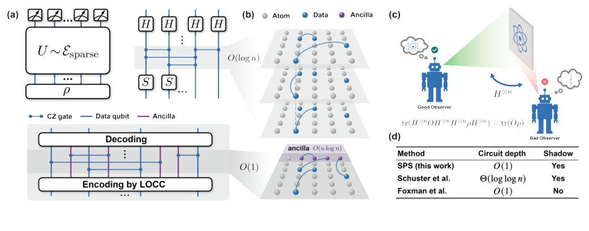
<figcaption class="paper-figure-caption"><b>Fig 1.</b> FIG. 1. Overview of shallow phase shadows. (a) Global shadow estimation of an unknown state 𝜌using sparse Clifford-IQP 𝑆-𝐶𝑍- 𝐻circuits. (b) The sampled sparse circuit can be implemented either in constant depth on all-to-all architectures using LOCC-assisted encoding and decoding with 𝑂(𝑛log 𝑛) auxiliary systems or in logarithmic depth without auxiliary systems. (c) The second-look principle measures two complementary global observables 𝑂and 𝐻⊗𝑛𝑂𝐻⊗𝑛. We then select the lower-bias track in post-processing, enabling accurate shadow estimation. (d) SPS achieves constant-depth shadow estimation beyond the light-cone restriction of the gluing framework [39], while existing constant-depth...</figcaption>
</figure>
<figure class="paper-figure-card">

<figcaption class="paper-figure-caption"><b>Fig 2.</b> FIG. 2. Scaling of the estimation bias with respect to the parameter 𝛾for the worst-case state vector |+⟩⊗2 |0⟩⊗𝑛−2 with 𝑛= 50. The performance of the Hadamard-conjugated task (𝜌′, 𝑂′, blue squares) is compared with the default task (orange triangles).</figcaption>
</figure>
<figure class="paper-figure-card">

<figcaption class="paper-figure-caption"><b>Fig 3.</b> FIG. 3. Statistical distribution of the estimation bias and variance with respect to qubit number 𝑛. Data are collected from 100 independently sampled random stabilizer states with 𝛾= 2 and 104 shots for each state. The violin plots illustrate the variation in estimator performance among different quantum states. The dashed lines indicate the mean value of bias and variance, and the solid black lines in (b) represent the standard deviation range.</figcaption>
</figure>
<figure class="paper-figure-card">
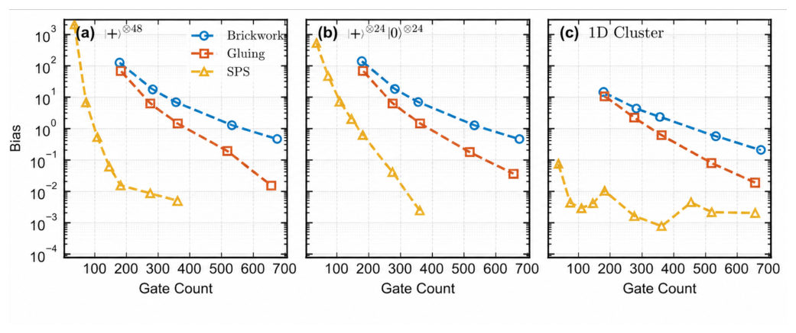
<figcaption class="paper-figure-caption"><b>Fig 4.</b> FIG. 4. Comparison of the estimation bias against two-qubit gate count (see Appendix G 2) for three shallow shadow schemes: 1D brickwork circuits (blue circles, [37]), Gluing circuits (orange squares, [39]), and SPS (yellow triangles, our approach). Notice that the logarithmic-depth one-dimensional (1D) brickwork baseline exhibits relative-error approximate state 2-design behavior established in Ref. [84, 85]. The results are shown for (a) the tensor product state vector |+⟩⊗𝑛, (b) |+⟩⊗𝑛/2 |0⟩⊗𝑛/2, with 𝑛= 48 and 2 × 104 shots and (c) the 1D cluster state. For SPS, the bias drops rapidly below the statistical noise floor (∼10−2), making the measurement error the dominant source of...</figcaption>
</figure>
<figure class="paper-figure-card">

<figcaption class="paper-figure-caption"><b>Fig 5.</b> FIG. 6. Schematic organization of the permutation sectors used in the variance bound. The sectors are indexed by an odd label 𝜋1 and an even label 𝜋2. We choose two dominant sectors with different row and column labels, of sizes 𝑚1 and 𝑚2, whose product is maximal. This maximality bounds the relevant non-dominant sectors by √𝑚1𝑚2, so that after grouping sites by odd labels the two smaller groups have sizes</figcaption>
</figure>
</div>

<p><strong>Summary.</strong> This paper presents Shallow Phase Shadows (SPS), a novel protocol for estimating global quantum states with significantly reduced circuit depth compared to existing methods. By adapting the measurement randomness to the specific task, SPS achieves constant-depth implementation using only CZ gates. This makes scalable quantum readout feasible on current, long-range connectivity quantum hardware.</p>
<p><strong>Why it may be interesting.</strong> It provides a concrete, resource-aware protocol for quantum characterization that is directly relevant to the hardware limitations (connectivity, gate type) faced by experimentalists working with trapped ions or neutral atoms.</p>
<details>
<summary>Detailed structure</summary>
<p><strong>Main problem.</strong> Developing scalable and efficient readout strategies for quantum processors to estimate global quantum state information.</p>
<p><strong>Main result.</strong> The proposed Shallow Phase Shadows (SPS) protocol achieves global shadow estimation with constant circuit depth, significantly outperforming conventional methods that require deep circuits.</p>
<p><strong>Method.</strong> The protocol introduces SPS, which utilizes a sparse Clifford-IQP ensemble and a 'second-look principle' to estimate stabilizer-state fidelities without requiring the ensemble to form an approximate relative-error design.</p>
<p><strong>Model / system.</strong> The work is applicable to quantum processors, specifically mentioning platforms like trapped ions and neutral atoms, and is formulated using the sparse Clifford-IQP circuit ensemble.</p>
<p><strong>Key observables.</strong> Stabilizer-state fidelities, estimation bias, and circuit depth.</p>
<p><strong>Important parameters / regimes.</strong> The sparsity parameter $\gamma$, system size $n$, and the required depth (constant vs. logarithmic).</p>
<p><strong>Assumptions / limitations.</strong> The protocol is proven for stabilizer-state observables, and the analysis relies on the structural properties of the sparse Clifford-IQP ensemble.</p>
<p><strong>Figures summary.</strong> Figures compare depth requirements (SPS vs. gluing frameworks) and show numerical simulations comparing the two-qubit gate count for SPS against other shallow-shadow schemes.</p>
<p><strong>Paper structure.</strong> The paper first identifies the bottleneck of deep circuits in global estimation, then introduces SPS using the sparse Clifford-IQP ensemble. It proves constant-depth feasibility, analyzes the variance bound (showing sub-exponential decay), and concludes with resource comparisons.</p>
</details>
<details>
<summary>Abstract</summary>
<p>Reliable and scalable readout strategies are essential for quantum technologies. As quantum processors grow, extracting useful information must remain feasible without measurement circuits becoming a dominant bottleneck. Randomized measurements and classical shadows provide a powerful route, but global estimation is conventionally associated with highly random ensembles that require increasing circuit depth and hence substantial experimental overhead. In this work, we show that substantially less randomness suffices when the readout is meaningfully adapted to the quantities being estimated. We introduce shallow phase shadows, based on a sparse Clifford-IQP ensemble, and prove efficient global estimation of stabilizer-state fidelities despite the ensemble not forming an approximate relative-error design. On all-to-all architectures, the protocol admits a constant-depth implementation using mid-circuit measurements and classical feedforward, or logarithmic depth without auxiliary systems. The protocol requires only controlled-phase entangling gates and offers a tunable trade-off between circuit resources and estimation accuracy, making it particularly amenable to experimentally relevant architectures with long-range connectivity. Our results show that scalable quantum readout need not reproduce generic randomness: task-adapted randomization can enable substantially shallower global characterization protocols.</p>
</details>
<p><sub><a href="#top">↑ back to top</a></sub></p>

<p><a id="paper-2609.09479"></a></p>
<h3 id="exact-asymptotic-equivalence-between-precisions-of-record-times-and-integrated-currents"><a href="http://arxiv.org/abs/2609.09479v1">Exact asymptotic equivalence between precisions of record-times and integrated currents</a></h3>
<p><strong>Authors:</strong> Alberto Garilli<br>
<strong>Type:</strong> theory · <strong>Category:</strong> statistical mechanics · <strong>PDF:</strong> <a href="https://arxiv.org/pdf/2609.09479v1">https://arxiv.org/pdf/2609.09479v1</a><br>
<strong>Analysis basis:</strong> full PDF text, analyzed in chunks
<strong>Topic relevance:</strong> <code>Full counting statistics</code> <strong>3/5</strong> · <code>non-equilibrium universality</code> <strong>2/5</strong> · <code>quantum measurements</code> <strong>1/5</strong></p>
<div class="figure-strip-hint">↔ Scroll figures horizontally</div>
<div class="paper-figures-scroll">
<figure class="paper-figure-card">

<figcaption class="paper-figure-caption"><b>Fig 1.</b> FIG. 1. a) An example of a network of states connected by transitions. The bi-directional transition connecting states α and β is observable, while we assume to have no knowledge about the hidden states and transitions (not necessarily bi-directional) occurring in the rest of the system (black dots and dashed lines inside the cloud). b) The associated trans-transition network. Each arrow indicates a possible succession of visible transitions, and it is associated with a trans-transition probability pℓ′ℓ and an inter-transition time τℓ′ℓ. c) Example of a trajectory of the observable current Ct along α ↔β. The evolution of the auxiliary inter-record process Mt is highlighted by a red dashed...</figcaption>
</figure>
<figure class="paper-figure-card">

<figcaption class="paper-figure-caption"><b>Fig 2.</b> FIG. 2. Graphical representation of the temporal succession ↑→↓→↓→↑→↑of visible transitions with the corresponding inter- transition times. The time-series of the total integrated current Ct can be represented as a succession of visible transitions ↑ (which increase Ct) and ↓(which decrease Ct). The time between two visible transitions ℓ′ and ℓis denoted by τℓ′,ℓ.</figcaption>
</figure>
<figure class="paper-figure-card">

<figcaption class="paper-figure-caption"><b>Fig 3.</b> FIG. 3. Construction of the Laplace transform Eq. (17). a) An excursion ∆T is defined as the time interval between two successive increments of the auxiliary process Mt (red arrows). Each excursion is decomposed into elementary time intervals τi, with i = 1, . . . , ˜l, where ˜l is the total number of intervals in the excursion. Each interval is identified with an inter-transition time, while the last one, τincr, is necessarily associated with the succession ↑→↑. Since the inter-transition times are independent, the Laplace transform of the distribution of ∆T factorizes into the product of the Laplace transforms of the individual inter- transition-time distributions. This yields the general...</figcaption>
</figure>
</div>

<p><strong>Summary.</strong> This theoretical paper proves a precise mathematical identity linking the fluctuation measure (Fano factor) of a measurable current in a Markov process to the fluctuation measure of the time intervals between record-setting events. By showing that record events induce a renewal process governed by combinatorial numbers, the authors provide a unified framework for analyzing non-equilibrium current fluctuations in complex networks.</p>
<p><strong>Why it may be interesting.</strong> This result provides a powerful, unified probabilistic tool to characterize non-equilibrium fluctuations in complex systems (like molecular motors or interacting particles) by relating macroscopic current statistics to the statistics of rare, record-setting events.</p>
<details>
<summary>Detailed structure</summary>
<p><strong>Main problem.</strong> The paper establishes an exact asymptotic equivalence between the fluctuations of integrated currents and the temporal statistics of current record events in continuous-time Markov jump processes.</p>
<p><strong>Main result.</strong> The Fano factor of the integrated current ($F_C$) is exactly equal to the squared coefficient of variation of the inter-record waiting times ($P_{\Delta T}$), i.e., $|F_C| = P_{\Delta T}$.</p>
<p><strong>Method.</strong> The equivalence is derived by showing that inter-record times induce a renewal structure, allowing the use of generating functions related to Narayana numbers to compare the moments of both fluctuation measures.</p>
<p><strong>Model / system.</strong> The analysis concerns continuous-time Markov jump processes on finite-state graphs, focusing on an integrated current $C_t$ along a bidirectional channel ($\alpha \leftrightarrow eta$).</p>
<p><strong>Key observables.</strong> Integrated Current ($C_t$), Fano Factor ($F_C$), Inter-record Waiting Times ($\Delta T_m$), and the Squared Coefficient of Variation of $\Delta T_m$ ($P_{\Delta T}$).</p>
<p><strong>Important parameters / regimes.</strong> The analysis is asymptotic ($t 	o \infty$) and requires the observed dynamics to be irreducible and the channel to be bidirectional.</p>
<p><strong>Assumptions / limitations.</strong> The primary assumptions include the existence of a renewal structure for inter-record times and the requirement of hidden irreducibility for the underlying graph.</p>
<p><strong>Figures summary.</strong> Figures illustrate the network structure, the temporal succession of visible transitions, and the mathematical construction of the Laplace transform for the inter-record time distribution.</p>
<p><strong>Paper structure.</strong> The paper develops the equivalence by first defining the observables, then showing that record events create a renewal process whose generating function is governed by Narayana numbers, leading to the final identity $|F_C| = P_{\Delta T}$.</p>
</details>
<details>
<summary>Abstract</summary>
<p>We establish an exact equivalence between the fluctuations of integrated currents and the temporal statistics of current record events in continuous-time Markov jump processes. Specifically, we show that, under minimal assumptions, the Fano factor of an integrated current coincides exactly with the squared coefficient of variation of the inter-record waiting times. This result is obtained by showing that inter-record times induce a renewal structure, since each record event resets the system to a fixed state, and that their generating function can be expressed exactly in terms of a combinatorial organization governed by Narayana numbers. The equivalence extends previous results obtained for unicyclic networks to arbitrary finite-state graphs and provides a unified representation of current fluctuations in terms of record-time observables. The results are derived within a purely probabilistic framework and clarify the structural origin of current precision in terms of first-passage-like event statistics.</p>
</details>
<p><sub><a href="#top">↑ back to top</a></sub></p>

<p><a id="paper-2609.10443"></a></p>
<h3 id="gauge-mean-field-theories-of-the-underscreened-kondo-lattice"><a href="http://arxiv.org/abs/2609.10443v1">Gauge mean-field theories of the underscreened Kondo lattice</a></h3>
<p><strong>Authors:</strong> Ewan Scott, Michal Kwasigroch<br>
<strong>Type:</strong> theory · <strong>Category:</strong> strongly correlated electrons · <strong>PDF:</strong> <a href="https://arxiv.org/pdf/2609.10443v1">https://arxiv.org/pdf/2609.10443v1</a><br>
<strong>Analysis basis:</strong> full PDF text, analyzed in chunks
<strong>Topic relevance:</strong> <code>Keldysh / 2PI / non-Gaussian methods</code> <strong>3/5</strong> · <code>methods for driven-dissipative</code> <strong>3/5</strong></p>
<div class="figure-strip-hint">↔ Scroll figures horizontally</div>
<div class="paper-figures-scroll">
<figure class="paper-figure-card">

<figcaption class="paper-figure-caption"><b>Fig 1.</b> FIG. 1. Ground state phase diagrams showing three phases: I – The normal FM state with local moments maximally polar- ized ¯S1,2 = 1/2 and no hybridization ¯V1 = 0, II – Weak Kondo ferromagnet with magnetization of the hybridized f-moment ¯S1 &gt; 0 and weak hybridization ¯V1 &gt; 0, III – Strong Kondo ferromagnet with weak magnetization of the hybridized f- moment ¯S1 &lt; 0 and strong hybridization, ¯V1 &gt; 0. The un- hybridized f-moment has a magnetization ¯S1 = 1/2 in all phases. Plot (a) shows the magnetic moment of the hybridized f-electron ¯S1 as a function of the dimensionless Kondo cou- pling JKρ and the relative strength of the coupling in the magnetic exchange channel JM = 2JK</figcaption>
</figure>
<figure class="paper-figure-card">

<figcaption class="paper-figure-caption"><b>Fig 2.</b> FIG. 2. A plot of the groundstate order parameters ¯S1 and ¯V1, magnetization and hybridization of the f1-fermion respec- tively for N = 20. The unhybridized f2-fermion always has a magnetization of ¯S2 = 1</figcaption>
</figure>
<figure class="paper-figure-card">
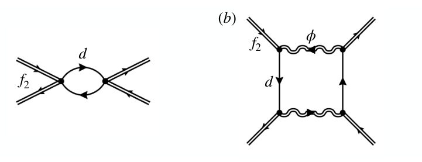
<figcaption class="paper-figure-caption"><b>Fig 3.</b> FIG. 3. Feynman diagrams for the (a) RKKY interaction between unhybridized f2-fermions, (b) the Hund’s interaction between f2-fermions, and (c) the diagrammatic expansion of the ϕ propagator Gϕϕ(ω) = ⟨ϕ†(ω)ϕ(ω)⟩in the RPA approximation. The double lines indicate the unhybridised f2-fermions, d are the heavy fermions (superposition of the hybridized f1-fermions and conduction electrons) and wavy lines are the ϕ gauge fields.</figcaption>
</figure>
</div>

<p><strong>Summary.</strong> This work develops a unified gauge mean-field theory to study the spin-1 underscreened Kondo lattice. By using a single control parameter N, the authors reconcile previous theoretical approaches and map out the ground state phase diagram. The findings clarify the interplay between magnetic order and Kondo screening in this complex correlated electron system.</p>
<p><strong>Why it may be interesting.</strong> The rigorous theoretical treatment of competing magnetic and Kondo interactions in a strongly correlated lattice is highly relevant to understanding heavy fermion materials and quantum criticality.</p>
<details>
<summary>Detailed structure</summary>
<p><strong>Main problem.</strong> The paper addresses the challenging problem of the spin-1 underscreened Kondo lattice (UKL) model, where magnetic order and Kondo hybridization can coexist.</p>
<p><strong>Main result.</strong> The authors develop a unifying variational theory that maps out the ground state phase diagram, revealing crucial differences between previously proposed mean-field theories regarding hybridization strength and total magnetization.</p>
<p><strong>Method.</strong> The study employs gauge mean-field theories (gMFT) using a single control parameter N and an unbiased variational ansatz, calculating fluctuation corrections to the large-N saddle-point.</p>
<p><strong>Model / system.</strong> The system is the spin-1 UKL model, described by a Hamiltonian involving Kondo coupling and fermionic spin moments. The analysis utilizes an N-replica generalization of the model, controlled by the parameter N.</p>
<p><strong>Key observables.</strong> Magnetic moments ($ar{S}_1, ar{S}_2$), hybridization fields ($ar{V}_1$), and the ground state phase diagram.</p>
<p><strong>Important parameters / regimes.</strong> The control parameter N, the Kondo coupling ($J_K$), and the ratio of Kondo to RKKY energy scales ($T_K$ vs $T_{RKKY}$).</p>
<p><strong>Assumptions / limitations.</strong> The analysis relies on the large-N expansion and the variational approximation, which simplifies the complex gauge field dynamics.</p>
<p><strong>Figures summary.</strong> Figures illustrate ground state phase diagrams showing three distinct phases (Normal FM, Weak Kondo FM, Strong Kondo FM) based on the relative strengths of coupling parameters.</p>
<p><strong>Paper structure.</strong> The paper introduces the model and the gMFT framework, develops the unifying variational ansatz, calculates fluctuation corrections, maps the phase diagram, and compares the results to prior mean-field theories.</p>
</details>
<details>
<summary>Abstract</summary>
<p>Various mean-field decoupling schemes have been introduced thus far to study the important and challenging problem of the spin-$1$ underscreened Kondo lattice where magnetic order can coexist with Kondo hybridization. We use a single control parameter $N$ and an unbiased variational ansatz to unify and connect the previously proposed decouplings to standard Read-Newns theory, where fluctuations are small in $1/N$. We compute the corrections around the large-$N$ limit. In particular, we make contact with Nozières strong-coupling theory by finding the residual ferromagnetic Hund interaction that decays logarithmically in the case of a heavy-fermion metal. We map out the ground state phase diagram as a function of $N$ and the Kondo coupling. We find crucial differences between the previously proposed mean-field theories in the strength of the hybridization and total magnetization of the coexistent phase. We show that, within our unifying variational theory, the previously proposed decouplings correspond to either taking $N=2$ from the start, or performing a $1/N$ expansion and then extrapolating to $N=2$. Finally, we summarize the generalization of our theory to $S>1$.</p>
</details>
<p><sub><a href="#top">↑ back to top</a></sub></p>

<p><a id="paper-2609.09304"></a></p>
<h3 id="multivariate-quantum-state-preparation-with-optimized-tensor-networks"><a href="http://arxiv.org/abs/2609.09304v1">Multivariate quantum state preparation with optimized tensor networks</a></h3>
<p><strong>Authors:</strong> Matthew L. Sims-Goh, Lukasz Cincio, Annina Z. Lieberherr, Mekena McGrew, Thomas R. Bromley<br>
<strong>Type:</strong> theory · <strong>Category:</strong> numerical methods · <strong>PDF:</strong> <a href="https://arxiv.org/pdf/2609.09304v1">https://arxiv.org/pdf/2609.09304v1</a><br>
<strong>Analysis basis:</strong> full PDF text, analyzed in chunks
<strong>Topic relevance:</strong> <code>methods for driven-dissipative</code> <strong>3/5</strong> · <code>analog quantum simulation</code> <strong>2/5</strong> · <code>quantum measurements</code> <strong>1/5</strong></p>
<div class="figure-strip-hint">↔ Scroll figures horizontally</div>
<div class="paper-figures-scroll">
<figure class="paper-figure-card">
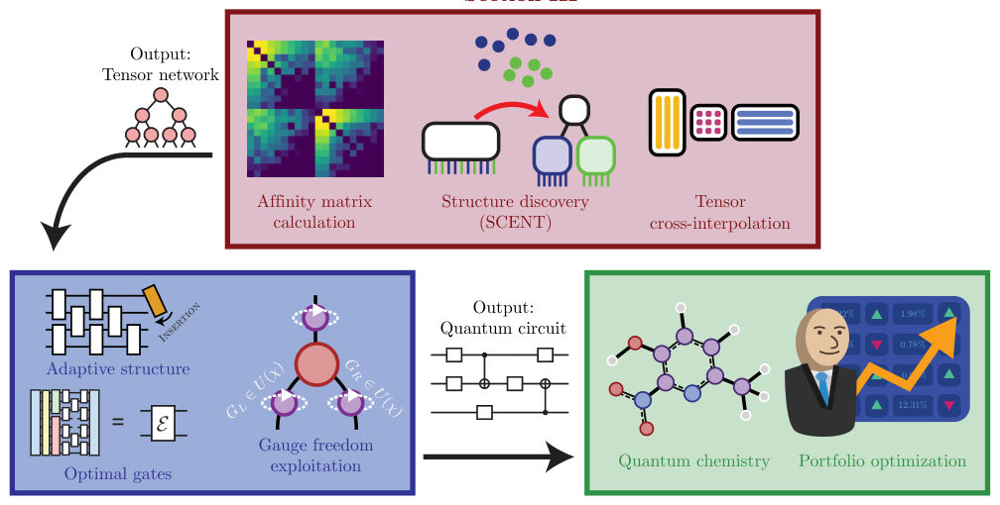
<figcaption class="paper-figure-caption"><b>Fig 1.</b> FIG. 1. Summary of our approach. (a) Our approach to tensor network structure discovery (Section III) begins with the calculation of affinity matrices (left), which quantify the correlation between qubits for the desired state. These are used to recursively partition qubits (middle), assigning qubit indices to branches in a way that seeks to minimize graph distance between highly entangled qubits. This tree structure is then employed in tensor cross-interpolation (right), yielding an interpolative tensor network approximation of the desired function. (b) We demonstrate how to synthesize a quantum circuit from this tensor network (Section IV). Our approach adaptively modifies circuit...</figcaption>
</figure>
<figure class="paper-figure-card">
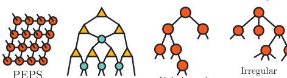
<figcaption class="paper-figure-caption"><b>Fig 2.</b> FIG. 2. Tensor networks for function encoding. (a) The interleaved (top) and serial (bottom) representations, de- picted for D = 2 dimensions. (b) Distance between closely correlated bits of the same variable. We depict how sequen- tial bits of the same variable are separated by D bonds in the interleaved representation, while the serial representation will separate the highest-significance bits of two adjacent vari- ables by B bonds. In both cases, this leads to many bond crossings that may be avoided by more problem-tailored net- work topologies. (c) Examples of the diverse range of tensor network structures common in the literature. Pictured are MPS (linear chain structure), TTN (acyclic...</figcaption>
</figure>
<figure class="paper-figure-card">
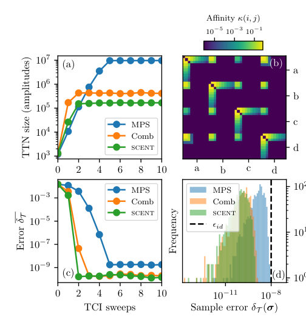
<figcaption class="paper-figure-caption"><b>Fig 3.</b> FIG. 3. Comparison of tensor network structures on an example problem. We demonstrate the approximation of a 40-qubit quantum state encoding a strongly correlated (η = 1) quadrivariate normal distribution N(⃗µ,Σ)(a, b, c, d), for a single realization of Σ ∼LKJD=4(η = 1) at B = 10 bits of precision per variable. TCI is performed with an MPS (blue), comb TTN (orange), and scent-optimized TTN (green) at tolerance ϵid = 10−8. (a) Convergence of the ten- sor network size in TCI — all three topologies converge within 5 sweeps, their sizes plateauing. Relative to MPS, the comb TTN compresses the function by a factor of 23, whereas the scent-optimized TTN compresses it by a factor of 58. (b)...</figcaption>
</figure>
<figure class="paper-figure-card">
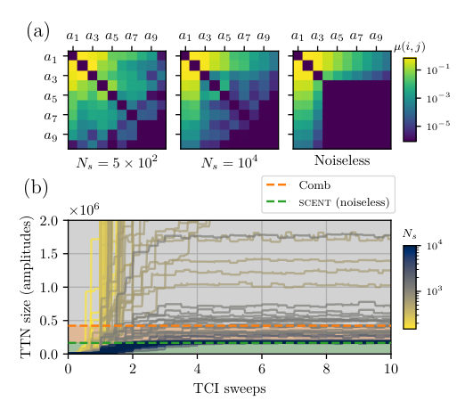
<figcaption class="paper-figure-caption"><b>Fig 4.</b> FIG. 5. Convergence of Monte Carlo sampling to con- struct the affinity matrix. Here, we study the approxima- tion of a 40-qubit quantum state encoding a strongly corre- lated quadrivariate normal distribution N(⃗µ,Σ)(a, b, c, d), for a single realization of Σ ∼LKJD=4(η = 1) (as in Figure 3) using both Monte Carlo and exact methods for scent. (a) Single-variable submatrices of affinity matrices constructed with Monte Carlo for Ns = 5 × 102 samples (left), Ns = 104 samples (middle), and noiseless tensor network methods (right). (b) Convergence traces for TCI using network struc- tures determined with scent for varying Monte Carlo sample counts Ns. As a point of comparison, we also plot the...</figcaption>
</figure>
<figure class="paper-figure-card">

<figcaption class="paper-figure-caption"><b>Fig 5.</b> FIG. 4. Effect of variable count and correlation strength on tensor network function construction. We study systematically the effect of the number of variables D and inverse correlation strength η on multivariate normal dis- tributions N(⃗µ,Σ)(⃗x). For each data point, 20 random covari- ance matrices are sampled from Σ ∼LKJD(η), and 10 sweeps of TCI (sufficient for convergence, see e.g. Figure 3(c)) are performed to tolerance ϵid = 10−8 with B = 10 bits of pre- cision per variable. Error bars represent bootstrapped 95% confidence intervals in the logarithmic mean. (a) The effect of variable count D on tensor network size at moderate corre- lation η = 50. (b) The effect of correlation...</figcaption>
</figure>
</div>

<p><strong>Summary.</strong> This paper presents SCENT, a novel protocol to optimize the structure of Tree Tensor Networks (TTNs) for encoding complex, multivariate quantum states. By using spectral clustering on entanglement metrics, it overcomes the limitations of standard MPS methods. The resulting optimized TTN structure is then compiled into an efficient quantum circuit, demonstrating high fidelity for problems in quantum chemistry and finance.</p>
<p><strong>Why it may be interesting.</strong> The development of scalable tensor network methods that move beyond linear chains (MPS) to handle complex, multi-variable correlations is crucial for simulating quantum many-body systems and complex quantum processes.</p>
<details>
<summary>Detailed structure</summary>
<p><strong>Main problem.</strong> The primary challenge is efficiently preparing quantum states corresponding to multivariate functions, which is difficult for standard tensor network representations like MPS due to topological limitations.</p>
<p><strong>Main result.</strong> The authors introduce SCENT, a protocol that uses spectral clustering on entanglement metrics to derive an optimal Tree Tensor Network (TTN) structure, leading to state preparation circuits with high fidelity and reduced gate counts.</p>
<p><strong>Method.</strong> The approach involves three main stages: using entanglement metrics (like Boolean Fourier entropy) to build an affinity matrix, applying spectral clustering to find an optimal TTN topology, and finally compiling this TTN structure into a quantum circuit using environment-tensor methods.</p>
<p><strong>Model / system.</strong> The model is quantum state preparation, where a multivariate function is encoded into a quantum state $|\psi
angle$ represented by a Tensor Network (specifically, a TTN). The system involves qubits and the associated Hilbert space.</p>
<p><strong>Key observables.</strong> Fidelity, number of CNOT gates, circuit depth, and the entanglement metrics (QMI, Boolean Fourier entropy) used for structure discovery.</p>
<p><strong>Important parameters / regimes.</strong> Bond dimension ($\chi$), target decomposition error ($\epsilon$), and the number of variables (e.g., 20 variables in the flagship demo).</p>
<p><strong>Assumptions / limitations.</strong> The method assumes that the optimal structure can be found by minimizing the mean inter-cluster affinity using spectral clustering, and that the TTN can be accurately compiled into a quantum circuit via isometric gauge techniques.</p>
<p><strong>Figures summary.</strong> Figures illustrate the overall pipeline: structure discovery using affinity matrices leading to TTN approximation via TCI, and the subsequent circuit synthesis for applications in quantum chemistry and portfolio optimization.</p>
<p><strong>Paper structure.</strong> The paper progresses by first identifying the limitations of MPS for multivariate functions, introducing SCENT for optimal TTN discovery, detailing the TCI approximation and isometric gauge placement, and concluding with the circuit compilation algorithm and benchmarking on physical problems.</p>
</details>
<details>
<summary>Abstract</summary>
<p>Quantics tensor trains are attracting intense interest for quantum-inspired computing and quantum state preparation. These methods, which approximate continuum functions by representing their amplitude encoding as a matrix product state (MPS), are exceedingly powerful for univariate functions but rapidly become challenging when handling multivariate functions, since the linear chain topology leads to a large distance between highly-entangled qubits. We overcome this limitation by introducing SCENT (Spectral Clustering for Entanglement miNimizing Trees). SCENT is a protocol that utilizes efficiently-computable pairwise entanglement metrics to determine a suitable tree tensor network (TTN) structure, which can then be efficiently approximated using tensor cross-interpolation (TCI); we find that it substantially outperforms MPS methods and improves upon previous TTN methods. We then apply these optimized TTNs to state preparation, introducing an approximate circuit compilation method based on environment-tensor methods without significantly conceding overall accuracy. Importantly, the inherent gauge freedom of TTNs can be directly exploited in this method, resulting in higher fidelity at a given circuit depth. We demonstrate this quantum state-preparation pipeline on archetypal state-preparation problems in quantum chemistry and financial portfolio optimization. In our flagship demonstration, we encode a 20-variable probability distribution with long-ranged, non-nearest neighbor inter-variable correlations in a 200-qubit state-preparation circuit with infidelity $7.44\times 10^{-9}$ using only 43284 CNOTs; depth and fidelity can be traded, allowing the same distribution to be prepared to infidelity $10^{-3}$ with as few as 5584 CNOTs.</p>
</details>
<p><sub><a href="#top">↑ back to top</a></sub></p>

<p><a id="paper-2609.09270"></a></p>
<h3 id="python-in-the-front-party-in-the-backline-compiling-quantum-workloads-across-cpus-gpus-and-fpgas"><a href="http://arxiv.org/abs/2609.09270v1">Python in the front, party in the Backline: compiling quantum workloads across CPUs, GPUs, and FPGAs</a></h3>
<p><strong>Authors:</strong> Joseph K. L. Lee, Mehrdad Malekmohammadi, Hong-Sheng Zheng, Shuli Shu, Cheick Doumbia, Kalman Szenes, Mehran Zamani Abnili, Thomas Ainsworth, Matthew Seymour, Thomas Germain, Leonhard Neuhaus, Josh Izaac, Lee J. O'Riordan<br>
<strong>Type:</strong> both · <strong>Category:</strong> quantum information and computing · <strong>PDF:</strong> <a href="https://arxiv.org/pdf/2609.09270v1">https://arxiv.org/pdf/2609.09270v1</a><br>
<strong>Analysis basis:</strong> full PDF text, analyzed in chunks
<strong>Topic relevance:</strong> <code>QC/QI experiment</code> <strong>3/5</strong> · <code>quantum measurements</code> <strong>3/5</strong></p>
<div class="figure-strip-hint">↔ Scroll figures horizontally</div>
<div class="paper-figures-scroll">
<figure class="paper-figure-card">

<figcaption class="paper-figure-caption"><b>Fig 1.</b> Fig. 1: High-level overview of the PennyLane program lowering process.</figcaption>
</figure>
<figure class="paper-figure-card">

<figcaption class="paper-figure-caption"><b>Fig 2.</b> Fig. 2: The Backline abstractions and how they compose.</figcaption>
</figure>
<figure class="paper-figure-card">

<figcaption class="paper-figure-caption"><b>Fig 3.</b> Fig. 4: Life cycle of a heterogeneous workload in Backline across a host, FPGA controller, and GPU coprocessor. Numbers indicate execution order. Steps 0-2 occur once per session. Steps 3-11 are one correction round and repeat for every decode. Steps 12-14 return results and tear down.</figcaption>
</figure>
<figure class="paper-figure-card">

<figcaption class="paper-figure-caption"><b>Fig 4.</b> Fig. 5: Architecture of the VPK120 hardware-handshake engine, which connects the APU control plane, ERNIC, local request/reply storage, and hardware orchestrator.</figcaption>
</figure>
<figure class="paper-figure-card">

<figcaption class="paper-figure-caption"><b>Fig 5.</b> Fig. 6: Baseline steady-state round-trip latency over 106 −1 rounds from FPGA controller to and from CPU or GPU copro- cessor. Timing is measured by the FPGA clock domain, with the first warm-up sample excluded from all plots. Statistical quantities are given in the legend of each distribution plot, with the excluded warm-up value given by t0.</figcaption>
</figure>
</div>

<p><strong>Summary.</strong> This paper presents Backline, a novel framework designed to bridge the gap between high-level quantum algorithm design in Python and the low-latency execution demands of fault-tolerant quantum computing. By compiling workloads through MLIR, it enables seamless, vendor-agnostic execution across CPUs, GPUs, and FPGAs. The results demonstrate microsecond-scale synchronous co-processing, which is crucial for realizing utility-scale quantum systems.</p>
<p><strong>Why it may be interesting.</strong> This work is highly relevant as it tackles the critical engineering bottleneck of scaling quantum computation by providing the necessary software stack to manage heterogeneous, low-latency classical control required for fault tolerance.</p>
<details>
<summary>Detailed structure</summary>
<p><strong>Main problem.</strong> The primary challenge is transitioning quantum workloads from research prototypes to production-grade, fault-tolerant systems requiring extremely low-latency classical control.</p>
<p><strong>Main result.</strong> The authors demonstrated microsecond-scale synchronous co-processing by compiling and executing quantum-classical workloads across CPUs, GPUs, and FPGAs using a novel framework.</p>
<p><strong>Method.</strong> They introduced Backline, a heterogeneous compilation and runtime framework that allows high-level Python programming to compile down through MLIR to execute on diverse, low-latency hardware accelerators.</p>
<p><strong>Model / system.</strong> The system targets Fault-Tolerant Quantum Computing (FTQC) architectures, requiring tight feedback loops for Quantum Error Correction (QEC). The physical demonstration uses an AMD VPK120 FPGA board controlling communication over RoCE v2 to an AMD Ryzen CPU and AMD Instinct GPU.</p>
<p><strong>Key observables.</strong> Median steady-state round-trip latencies (e.g., 2.305 $\mu$s to CPU, 4.5 $\mu$s to GPU) and cycle-accurate RTT profiling.</p>
<p><strong>Important parameters / regimes.</strong> Latency budgets for QEC decoders (1 ns–1 $\mu$s for real-time control) and the ability to handle various message-issuing cadences (back-to-back vs. random-delayed).</p>
<p><strong>Assumptions / limitations.</strong> The framework assumes the ability to abstract hardware complexity while maintaining control over low-level timing requirements, and the benchmarking relies on dedicated hardware-paced measurement paths.</p>
<p><strong>Figures summary.</strong> Figures illustrate the high-level compilation flow, state transition diagrams for the hardware orchestrator, and comparative traces showing how steady-state latencies shift when varying the message-issuing cadence (e.g., random-delayed vs. back-to-back).</p>
<p><strong>Paper structure.</strong> The paper details the necessity of the framework (QEC/hardware constraints), the existing tools (PennyLane/Catalyst), the technical design of Backline for interop, and concludes with detailed usage demonstrations and benchmarks.</p>
</details>
<details>
<summary>Abstract</summary>
<p>Moving from quantum research and development to production-grade, fault-tolerant quantum workload execution remains one of the most significant challenges facing quantum platform builders. While Python frameworks have enabled an easy entry point for quantum algorithm design, the low-latency requirements for real-time quantum error correction (QEC) demand performance that traditional interpreted environments cannot provide. FPGAs and ASICs play a central role at these layers, but their specialized programming models make development rigid and time-consuming. CPUs, GPUs, and other accelerators introduce a different challenge: as infrastructure becomes increasingly heterogeneous, programming across different devices and their associated abstractions becomes more complex. Allowing researchers to write workloads in high-level languages that map to low-latency execution across diverse distributed target platforms will enable the development of key infrastructure for utility-scale quantum systems. For this, we introduce $\textit{Backline}$, a heterogeneous compilation and runtime framework built within PennyLane and Catalyst. Backline allows us to design and build quantum-classical workloads for high-performance and low-latency devices, with compilation directly from a Python interface through MLIR. We demonstrate the compilation and execution of several quantum workloads with low-latency data movement across a mix of CPUs, GPUs, and FPGAs, for both local and distributed remote hardware targets, all from a vendor-agnostic Python frontend. With an AMD VPK120 FPGA board as the controller, issuing each round from its hardware-handshake engine, we measured median steady-state round-trip latencies over RoCE v2 of $2.305~μ$s to an AMD Ryzen Threadripper PRO CPU and $4.5~μ$s to an AMD Instinct MI210 GPU across $10^6-1$ rounds per path, demonstrating microsecond-scale synchronous co-processing.</p>
</details>
<p><sub><a href="#top">↑ back to top</a></sub></p>

<p><a id="paper-2609.10037"></a></p>
<h3 id="semi-device-independent-quantum-randomness-certification-in-semiconductor-spin-noise-measurements"><a href="http://arxiv.org/abs/2609.10037v1">Semi-device-independent quantum randomness certification in semiconductor spin-noise measurements</a></h3>
<p><strong>Authors:</strong> Hamid Tebyanian, Marius Cizauskas, Manfred Bayer, Marc Assmann, Alex Greilich<br>
<strong>Type:</strong> both · <strong>Category:</strong> quantum information and computing · <strong>PDF:</strong> <a href="https://arxiv.org/pdf/2609.10037v1">https://arxiv.org/pdf/2609.10037v1</a><br>
<strong>Analysis basis:</strong> full PDF text, analyzed in chunks
<strong>Topic relevance:</strong> <code>quantum optics experiment</code> <strong>3/5</strong> · <code>quantum measurements</code> <strong>2/5</strong> · <code>QC/QI experiment</code> <strong>1/5</strong></p>
<div class="figure-strip-hint">↔ Scroll figures horizontally</div>
<div class="paper-figures-scroll">
<figure class="paper-figure-card">

<figcaption class="paper-figure-caption"><b>Fig 1.</b> Figure 1: Source-adversarial certification of semiconductor spin noise. A, Sources: bulk n-GaAs and a charged (In, Ga)As quantum-dot ensemble in a microcavity, in transverse field Bx; probe Faraday rotation δθF (t) from equilibrium spin fluctuations generates the orthogonally polarised signal. B, Trust boundary. The source and any adversary ρAE with memory E are untrusted, bounded only by the tested mean-photon-number and declared analogue range; the receiver (GT analyzer, nPBS, balanced photoreceiver BPR, ADC) is trusted and calibrated. Two-phase test rounds fix ¯ntest; the truncated-Fock SDP returns h∗ cert, which sets the extractor output. C, Three regimes (Table 1): spin-noise-matched...</figcaption>
</figure>
<figure class="paper-figure-card">
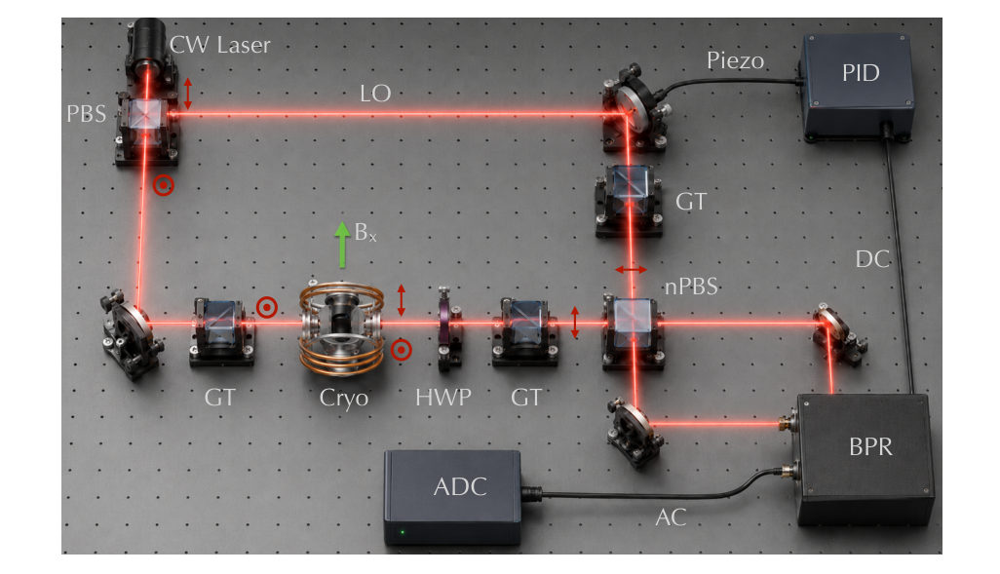
<figcaption class="paper-figure-caption"><b>Fig 2.</b> Figure 2: Experimental setup. A continuous-wave laser is split into a probe, which measures spin noise via Faraday rotation in the sample (held at 6 K in a transverse magnetic field Bx), and a local oscillator (LO) routed around the sample. The orthogonal-polarisation component after the sample interferes with the LO on a 50/50 non-polarizing beamsplitter (nPBS) and is detected by a balanced photoreceiver (BPR). The differential DC output drives the phase lock; the AC component is amplified, filtered, and digitized.</figcaption>
</figure>
<figure class="paper-figure-card">

<figcaption class="paper-figure-caption"><b>Fig 3.</b> Figure 3: Two spectral regimes in the stored spin-noise data. A, Normalised FPGA spectra stored for n-GaAs at 40 mW for the two saved lock settings (maximum- and minimum-spin- noise), showing the phase-selective narrow spin-noise resonance. B, Corresponding quantum-dot spectra at 20 mW: the spin-noise excess fills the analysed receiver band; the marker indicates an isolated 30.3% technical line outside the displayed range. Thin curves show the stored ratios; thick curves show frequency-binned medians for visibility. C, Full-band variance contrast ∆V of Eq. (1) from the 1.31 ms digitiser records at each recorded probe power; error bars are temporal-block standard errors from 128 contiguous...</figcaption>
</figure>
<figure class="paper-figure-card">

<figcaption class="paper-figure-caption"><b>Fig 4.</b> Figure 4: Narrowband and broadband spin-noise excess. Spectral excess 100 (Ssig − SLO)/SLO, at the maximum-spin-noise lock setting, obtained from Hann-windowed 1 µs blocks of the 1.31 ms records and collected into 10 MHz bins. A, n-GaAs. Traces are offset by 7% per probe power; dashed lines indicate their zero levels. The narrow Larmor signal increases with probe power within the predeclared matched band, 121 MHz to 131 MHz, shaded in grey. Filled circles give the matched-band excess. B, (In, Ga)As quantum dots, shown without offsets. The spin-noise excess extends across the receiver band and reaches its largest broadband value near 30 mW. Shaded bands and error bars denote ±1 standard...</figcaption>
</figure>
<figure class="paper-figure-card">

<figcaption class="paper-figure-caption"><b>Fig 5.</b> Figure 5: Certified entropy versus tested source energy. Certified per-symbol min- entropy h∗ cert as a function of the mean-energy bound ¯n for the three calibrated receiver modes, all obtained using the same truncated-Fock SDP with the corresponding noisy-homodyne POVM. Markers: experimental tested-energy operating points; star: the 131ms GaAs matched acquisition; inset: enlarged experimental region. GaAs broadband points form the vacuum-limited receiver benchmark, GaAs matched points the narrowband spin-noise-attributed certificates, and quantum-dot points the broadband signal-resolved certificates.</figcaption>
</figure>
</div>

<p><strong>Summary.</strong> This paper introduces a semi-device-independent method to certify the quantum randomness generated by semiconductor spin noise. By using SDP constrained only by measurable energy bounds, the authors demonstrate high, record-breaking entropy rates from quantum dot and GaAs spin noise sources. This advances the field by providing a practical, model-agnostic certification for solid-state quantum random number generators.</p>
<p><strong>Why it may be interesting.</strong> This work directly addresses the practical implementation of quantum information protocols by providing a robust, model-independent certification method for a solid-state quantum source, bridging theory and experimental quantum optics.</p>
<details>
<summary>Detailed structure</summary>
<p><strong>Main problem.</strong> The core challenge is certifying the quantum randomness generated by complex solid-state spin noise sources without needing a full, microscopic model of the underlying physics.</p>
<p><strong>Main result.</strong> The authors achieved high certified entropy rates (up to 3.4 Gbit/s for quantum dots) from spin noise, significantly exceeding previous benchmarks.</p>
<p><strong>Method.</strong> They employ a semi-device-independent (SDI) certification framework using Semidefinite Programming (SDP) to bound the conditional min-entropy, constrained only by measurable quantities like mean-photon-number bounds.</p>
<p><strong>Model / system.</strong> The system utilizes semiconductor spin noise from platforms like (In,Ga)As quantum-dot ensembles and n-GaAs epilayers, measured via homodyne detection.</p>
<p><strong>Key observables.</strong> Certified entropy rate ($h^*_{	ext{cert}}$), mean-photon-number bound ($ar{n}$), and measured noise variances ($\sigma^2$).</p>
<p><strong>Important parameters / regimes.</strong> Achieved rates: 3.2–3.4 Gbit/s (QD) and 33 Mbit/s (GaAs); the certification tolerates resolved source energy contributions.</p>
<p><strong>Assumptions / limitations.</strong> The analysis relies on rigorous Fock-space truncation and assumes the source is constrained by an experimentally tested mean-photon-number bound, rather than requiring full microscopic knowledge.</p>
<p><strong>Figures summary.</strong> Figures illustrate the certification architecture, compare different spectral regimes (broadband vs. matched mode), and show the experimental setup using balanced photoreceivers.</p>
<p><strong>Paper structure.</strong> The paper establishes the problem, details the SDI certification methodology using SDP, presents results across multiple solid-state platforms (QD and GaAs), and concludes with performance comparisons against other QRNG sources.</p>
</details>
<details>
<summary>Abstract</summary>
<p>Complex solid-state systems are promising platforms for scalable, high-bandwidth quantum random-number generation, yet certifying the quantum origin of their fluctuations remains difficult because the underlying microscopic dynamics are hard to model and validate. Here we demonstrate semi-device-independent quantum randomness certification from semiconductor spin noise, to our knowledge the first such certificate on any spin-noise source, without relying on a microscopic model of the spin system. The untrusted optical source is constrained by an experimentally tested mean-photon-number bound together with a declared analogue-range and per-sample clipping ceiling, while the trusted receiver is described as a calibrated, noisy, coarse-grained homodyne measurement. Using a semidefinite programme with rigorously controlled Fock-space truncation, we certify randomness that remains private against an adversary holding arbitrary quantum side information. Offline analysis yields certified entropy rates of $3.2$--$3.4$\,Gbit/s from a singly charged (In,Ga)As quantum-dot ensemble and $33$\,Mbit/s from $n$-GaAs in a spin-noise-matched detection mode. This exceeds the certified entropy rate of earlier spin-noise generators by more than two orders of magnitude, and the certificate tolerates a resolved per-symbol energy contribution from the solid-state emitter itself rather than requiring a near-vacuum input.</p>
</details>
<p><sub><a href="#top">↑ back to top</a></sub></p>
<hr>
<p>
<a href="index.html">← Index</a>
 · <a href="papers_01.html">← Previous</a> · <a href="papers_03.html">Next →</a>
</p>
<hr>

</body>
</html>
